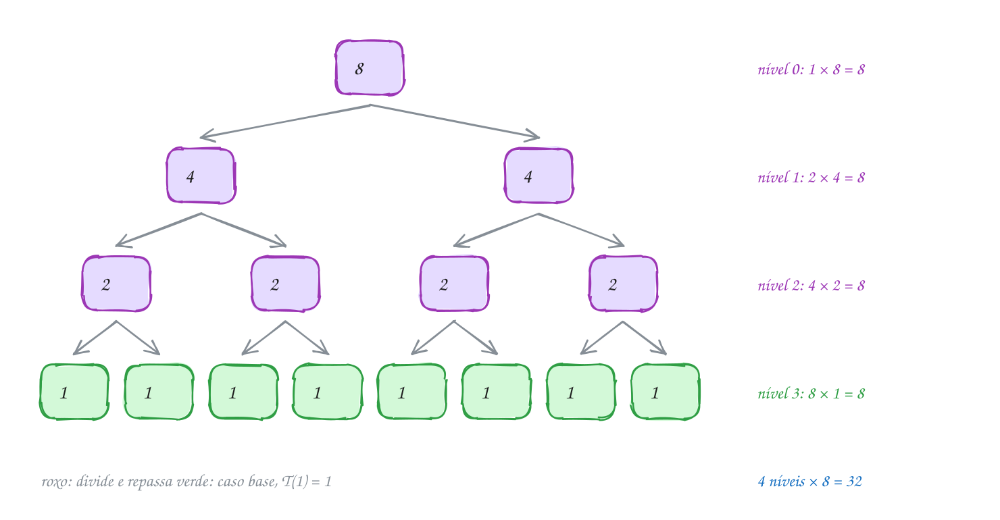
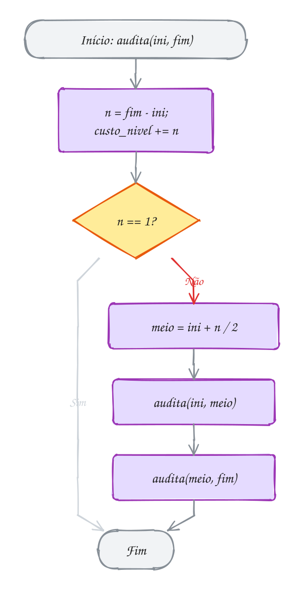
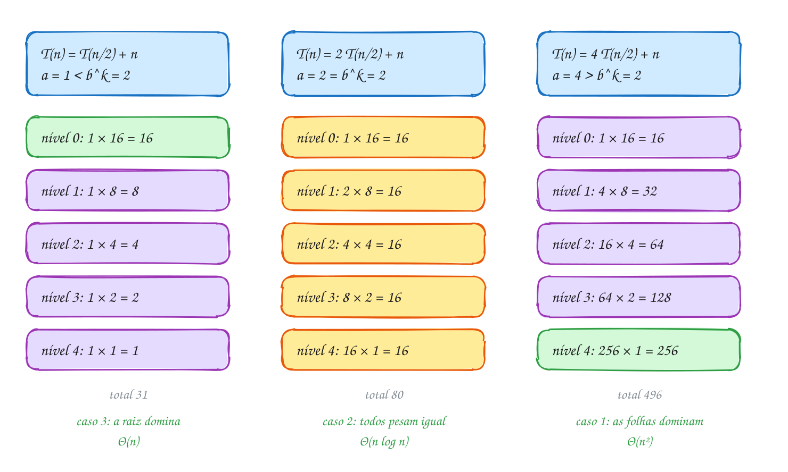
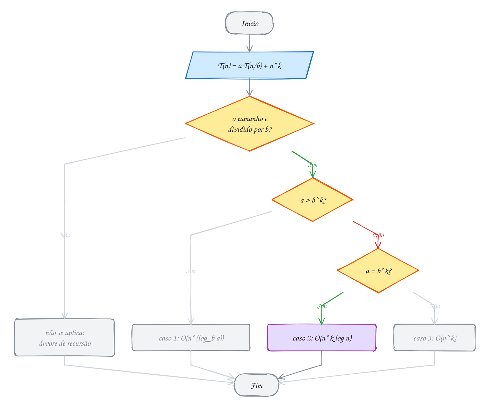
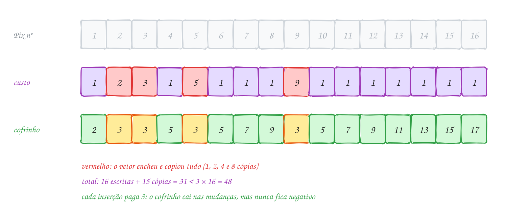
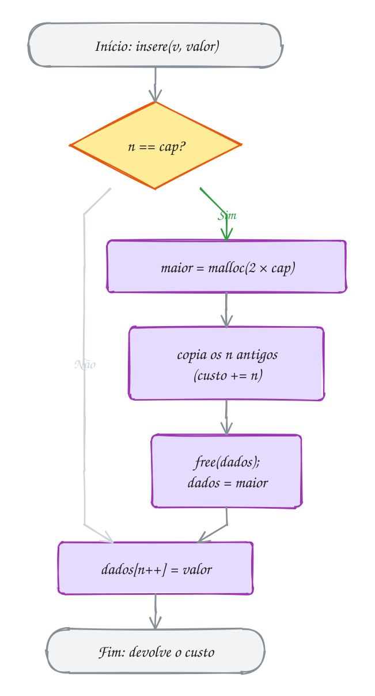
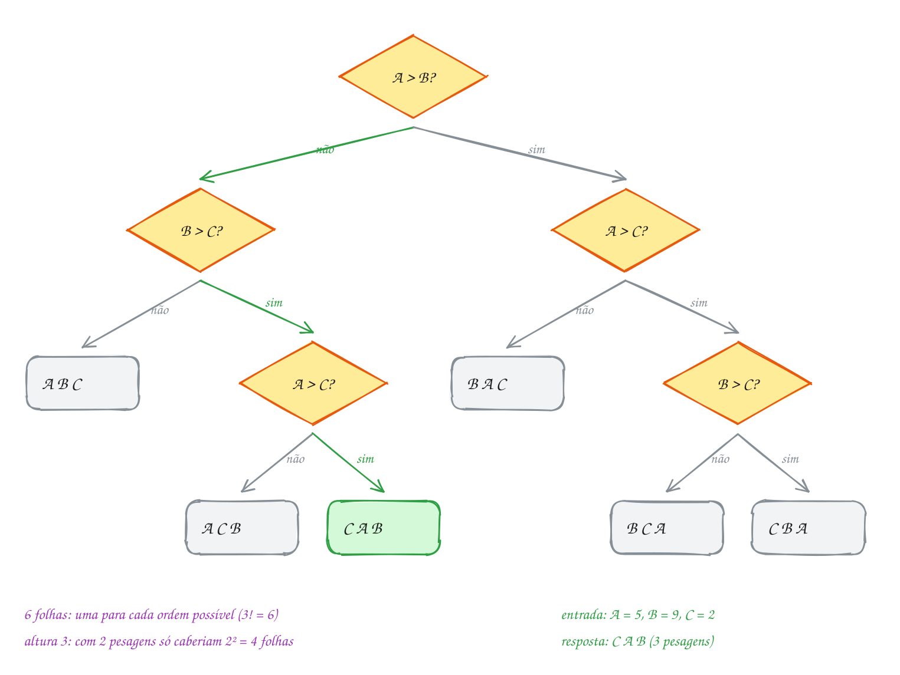
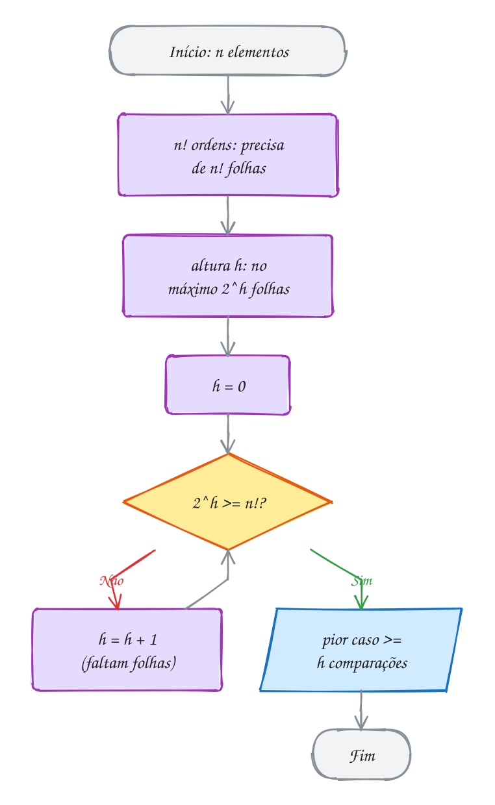
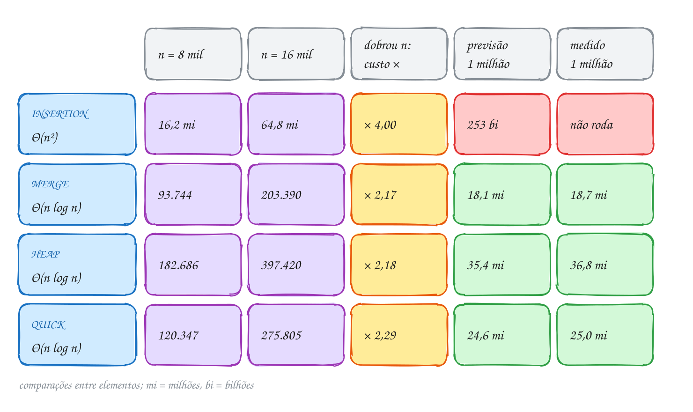
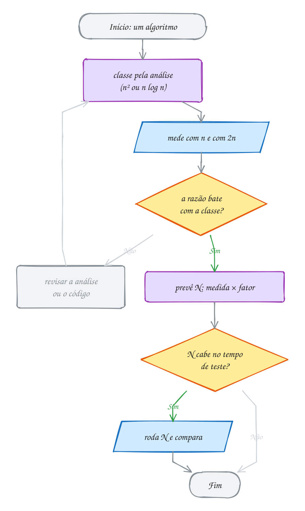

[!IMPORTANT] Mundo 8 · Técnicas de projeto · Rota do jogo: etapa 24 de 29
Missão: resolver recorrências e aplicar o teorema mestre.
Vem de: Módulo 29 · Grafos: ciclos e cortes; problemas difíceis. Segue para: Módulo 19 · Enumeração e backtracking.
Checkpoints desta fase:
- Ler os assuntos 0114 a 0118 e refazer os exemplos
- Resolver os 4 exercícios de cada assunto, escrevendo o código sozinho
- Fechar a lista prática (P1701 a P1730)
- Enfrentar os desafios do módulo
- Chefão: resolver as questões de prova do módulo sem consultar
Contar laços (módulo 10) não mede função recursiva. O módulo cobre recorrências, árvore de recursão, teorema mestre, análise amortizada e o limite Ω(n log n) da ordenação, e fecha prevendo o tempo de quatro ordenações. Dá prova aos "n log n" dos módulos 13 e 14.
T(n-1) contra T(n/2): "duas chamadas" pode ser Θ(n) ou Θ(2ⁿ)clock() e contadores, e prever o tempoUsa recursão (0031 a 0033), Big-O (0071 e 0072), vetor que cresce (0055 e 0075), pilha (0082), fila (0085), merge e quick sort (módulo 13), heap (0102 e 0103) e ponteiro para função (0050).
Matemática: log₂ n é quantas vezes n se divide por 2 até chegar em 1
(log₂ 1024 = 10); log_b a é o expoente que leva b a a (log₃ 9 = 2).
log2 e log ficam em <math.h>; as flags de estudo já ligam -lm.
O 0118 traz o TAD ordena.h e ordena.c, com as quatro ordenações e um
contador de comparações. Os tempos variam entre execuções; as comparações, não.
| # | Assunto |
|---|---|
| 0114 | Recorrências e árvore de recursão |
| 0115 | Teorema mestre |
| 0116 | Análise amortizada |
| 0117 | Limite inferior da ordenação |
| 0118 | Juntando tudo |
[!NOTE] Cada assunto é um capítulo: Conceito (a explicação), Exemplos de uso (programas que compilam sozinhos: rode com o comando abaixo de cada um e compare com a saída no fim do código) e Exercícios (cada um é um arquivo em
material/com o esqueleto, as dicas e o espaço para a resposta; resoluções em_respostas/17-analise-avancada/).
No módulo 10, você mediu o custo de um algoritmo contando as voltas dos laços. Uma função recursiva quase não tem laço: o trabalho está espalhado pelas chamadas que ela faz a si mesma. Pense na contabilidade de uma rede de farmácias. A chefe recebe um lote de notas fiscais, confere o lote inteiro, divide em dois lotes iguais e entrega cada metade a um auditor, que faz o mesmo com a sua metade. Com uma nota só, o auditor confere e para. Quantas notas são olhadas no total? Contar laços não responde.
A ferramenta para isso é a recorrência: uma equação que dá o custo de uma
função recursiva para uma entrada de tamanho n em termos do custo dela para
entradas menores, mais um caso base que diz quanto custa a menor entrada
(CORMEN et al., 2024, cap. 4). Chamando de T(n) o custo de conferir um lote
de n notas, a auditoria fica assim:
T(1) = 1 (caso base: confere a nota e para)
T(n) = 2 T(n/2) + n (duas chamadas com metade, mais n de trabalho)
Para escrever a recorrência a partir do código, faça três perguntas. Quantas
chamadas recursivas a função faz, e com que tamanho? Aqui são 2, com metade
cada, e isso vira o termo 2 T(n/2). Quanto trabalho ela faz fora das
chamadas? Aqui, olhar as n notas, e isso vira o + n. Qual é o caso base e
quanto ele custa? Aqui, T(1) = 1 (ZIVIANI, 2010, cap. 2).
A recorrência tem T dos dois lados, então ainda não diz quanto custa.
Resolver é chegar numa fórmula só em n. O jeito mais visual é a árvore
de recursão: cada chamada vira um nó, e dentro do nó fica o trabalho que ela
faz sozinha, sem contar as filhas. Depois você soma nível por nível
(LINTZMAYER; MOTA, 2023). Na auditoria, o nível 0 é a chefe, com n notas. O
nível 1 tem 2 auditores com n/2 cada, que somam n. O nível k tem 2^k
chamadas de n/2^k notas, e de novo a soma dá n. Os lotes caem pela metade
até chegar em 1, o que leva log₂ n divisões, então há log₂ n + 1 níveis.
O total é n log₂ n + n, ou Θ(n log n).
O símbolo Θ (teta) diz que a função cresce exatamente naquele ritmo. O
O do assunto 0072 é um teto: garante que o custo não passa daquilo. O Θ é
teto e piso ao mesmo tempo: o custo nem passa nem fica abaixo daquele ritmo,
fora constantes. As definições formais estão no assunto 0166 (CORMEN et al.,
2024, cap. 3).
A árvore também serve para chutar a resposta de uma recorrência difícil. O
chute então é confirmado pelo método da substituição: você supõe que a
resposta vale para entradas menores e prova por indução que vale para n. O
cuidado é chegar exatamente na expressão chutada no passo da indução; uma
constante a mais que "não faz diferença" invalida a prova (CORMEN et al.,
2024, cap. 4). O terceiro método, o teorema mestre, é o assunto 0115.
A árvore mostra ainda os dois recursos que uma função recursiva gasta, porque
ela é o filme da pilha de chamadas do assunto 0031. O tempo é a soma de
todos os nós: para 8 notas, são 2n - 1 = 15 chamadas. A memória é a
altura da árvore, porque só os frames de um caminho da raiz até uma folha
ficam vivos ao mesmo tempo: no máximo log₂ n + 1 = 4 (FEOFILOFF, 2009).
A forma da recorrência decide a forma da árvore, e a forma da árvore decide o
resultado. Uma chamada só, com tamanho caindo de 1 em 1, dá uma linha de n
nós. Uma chamada só, com tamanho caindo pela metade, dá uma linha de log n
nós. Duas chamadas com tamanho caindo de 1 em 1 dão uma árvore que dobra a
cada nível. A tabela reúne os casos que mais aparecem:
| recorrência | árvore | resultado | exemplo |
|---|---|---|---|
T(n) = T(n-1) + 1 |
uma linha de n nós | Θ(n) | percorrer lista recursivamente |
T(n) = T(n/2) + 1 |
uma linha de log n nós | Θ(log n) | busca binária |
T(n) = T(n-1) + n |
uma linha, nós encolhendo | Θ(n²) | selection sort recursivo |
T(n) = 2 T(n/2) + n |
binária, log n níveis de custo n | Θ(n log n) | merge sort, a auditoria |
T(n) = 2 T(n-1) + 1 |
binária, n níveis que dobram | Θ(2ⁿ) | Hanói (assunto 0033) |
[!WARNING] "Duas chamadas recursivas" não diz nada sozinho: decide o tamanho de cada chamada.
2 T(n/2) + 1(máximo dividindo o vetor) dá Θ(n);2 T(n-1) + 1(Hanói) dá Θ(2ⁿ): paran = 30, mais de um bilhão de chamadas.
A chefe da contabilidade confere um lote de notas, divide em dois e passa cada metade a um auditor, que faz o mesmo. Com 8 notas, cada caixa é uma chamada; cada linha soma 8, e são 4 linhas:

O código soma as notas de cada nível num vetor indexado pela profundidade e
confere n log₂ n + n para lotes maiores:
#include <stdio.h>
#define MAX_NIVEIS 32
long custo_nivel[MAX_NIVEIS]; // notas conferidas em cada nível da recursão
// confere o lote [ini, fim): olha todas as notas e divide o lote em dois
void audita(int ini, int fim, int nivel) {
int n = fim - ini;
custo_nivel[nivel] += n; // trabalho fora das chamadas: n
if (n == 1) {
return; // caso base: uma nota só
}
int meio = ini + n / 2;
audita(ini, meio, nivel + 1); // T(n/2)
audita(meio, fim, nivel + 1); // T(n/2)
}
// zera os níveis, audita n notas e devolve o total
long total_auditado(int n, int mostrar) {
for (int k = 0; k < MAX_NIVEIS; k++) {
custo_nivel[k] = 0;
}
audita(0, n, 0);
long total = 0;
for (int k = 0; k < MAX_NIVEIS && custo_nivel[k] > 0; k++) {
if (mostrar) {
printf("nível %d: %ld notas\n", k, custo_nivel[k]);
}
total += custo_nivel[k];
}
return total;
}
int main(void) {
printf("total: %ld notas\n\n", total_auditado(8, 1));
int tamanhos[] = {8, 64, 1024, 1048576};
int lg[] = {3, 6, 10, 20}; // log2 de cada tamanho
printf(" n T(n) n log n + n\n");
for (int i = 0; i < 4; i++) {
int n = tamanhos[i];
printf("%7d %12ld %12ld\n", n, total_auditado(n, 0), (long)n * lg[i] + n);
}
return 0;
}
// Saída:
// nível 0: 8 notas
// nível 1: 8 notas
// nível 2: 8 notas
// nível 3: 8 notas
// total: 32 notas
//
// n T(n) n log n + n
// 8 32 32
// 64 448 448
// 1024 11264 11264
// 1048576 22020096 22020096
O fluxograma é a função audita e não tem laço: as duas caixas audita são
o 2 T(n/2) e a caixa custo_nivel += n é o + n:

Abrir o T até o caso base, com n = 8:
| passo | conta | valor |
|---|---|---|
| T(1) | caso base | 1 |
| T(2) | 2 · T(1) + 2 = 2 + 2 | 4 |
| T(4) | 2 · T(2) + 4 = 8 + 4 | 12 |
| T(8) | 2 · T(4) + 8 = 24 + 8 | 32 |
Bate com a árvore (4 níveis de 8) e com o programa.
Exemplo A227 · Duas chamadas, destinos diferentes
#include <stdio.h>
long chamadas = 0; // contador global: quantas vezes alguma função foi chamada
// maior valor de v[ini..fim-1] dividindo ao meio: T(n) = 2 T(n/2) + 1
int maximo(const int v[], int ini, int fim) {
chamadas++;
if (fim - ini == 1) {
return v[ini];
}
int meio = ini + (fim - ini) / 2;
int a = maximo(v, ini, meio);
int b = maximo(v, meio, fim);
return a > b ? a : b;
}
// Fibonacci ingênuo: T(n) = T(n-1) + T(n-2) + 1
long fib(int n) {
chamadas++;
if (n < 2) {
return n;
}
return fib(n - 1) + fib(n - 2);
}
// soma de 1 a n, uma chamada por vez: T(n) = T(n-1) + 1
long soma(int n) {
chamadas++;
if (n == 0) {
return 0;
}
return n + soma(n - 1);
}
int main(void) {
int vendas[30];
for (int i = 0; i < 30; i++) {
vendas[i] = (i * 37) % 101; // vendas do dia, valores "embaralhados"
}
printf(" n | maximo: 2 T(n/2) + 1 | fib: T(n-1) + T(n-2) + 1 | soma: T(n-1) + 1\n");
for (int n = 10; n <= 30; n += 10) {
chamadas = 0;
int m = maximo(vendas, 0, n);
long c_max = chamadas;
chamadas = 0;
long f = fib(n);
long c_fib = chamadas;
chamadas = 0;
long s = soma(n);
long c_soma = chamadas;
printf("%2d | %3d em %2ld chamadas | %6ld em %7ld chamadas | %3ld em %2ld chamadas\n",
n, m, c_max, f, c_fib, s, c_soma);
}
return 0;
}
// Saída:
// n | maximo: 2 T(n/2) + 1 | fib: T(n-1) + T(n-2) + 1 | soma: T(n-1) + 1
// 10 | 94 em 19 chamadas | 55 em 177 chamadas | 55 em 11 chamadas
// 20 | 97 em 39 chamadas | 6765 em 21891 chamadas | 210 em 21 chamadas
// 30 | 97 em 59 chamadas | 832040 em 2692537 chamadas | 465 em 31 chamadas
gcc ~/LPEDC/material/A227.c -o ~/LPEDC/material/A227 && ~/LPEDC/material/A227
Exemplo A228 · Hanói: a árvore em que cada nível dobra
#include <stdio.h>
#define MAX_DISCOS 25
long movimentos_nivel[MAX_DISCOS]; // movimentos feitos em cada nível da recursão
// move n discos de 'de' para 'para' usando 'aux': T(n) = 2 T(n-1) + 1
void hanoi(int n, char de, char para, char aux, int nivel, int mostrar) {
if (n == 0) {
return;
}
if (mostrar) {
printf("%*shanoi(%d, %c -> %c)\n", 2 * nivel, "", n, de, para);
}
hanoi(n - 1, de, aux, para, nivel + 1, mostrar); // tira os n-1 de cima
movimentos_nivel[nivel]++; // move o disco maior: o "+ 1"
hanoi(n - 1, aux, para, de, nivel + 1, mostrar); // põe os n-1 por cima
}
long resolve(int n, int mostrar) {
for (int k = 0; k < MAX_DISCOS; k++) {
movimentos_nivel[k] = 0;
}
hanoi(n, 'A', 'C', 'B', 0, mostrar);
long total = 0;
for (int k = 0; k < n; k++) {
total += movimentos_nivel[k];
}
return total;
}
int main(void) {
printf("A árvore de chamadas com 3 discos (o recuo é o nível):\n");
resolve(3, 1);
printf("\nCom 5 discos, nível por nível:\n");
long total = resolve(5, 0);
for (int k = 0; k < 5; k++) {
printf("nível %d: %2ld × hanoi(%d), 1 movimento cada\n", k, movimentos_nivel[k], 5 - k);
}
printf("total: %ld = 2^5 - 1\n", total);
printf("\n n movimentos\n");
for (int n = 5; n <= 20; n += 5) {
printf("%2d %12ld\n", n, resolve(n, 0));
}
return 0;
}
// Saída:
// A árvore de chamadas com 3 discos (o recuo é o nível):
// hanoi(3, A -> C)
// hanoi(2, A -> B)
// hanoi(1, A -> C)
// hanoi(1, C -> B)
// hanoi(2, B -> C)
// hanoi(1, B -> A)
// hanoi(1, A -> C)
//
// Com 5 discos, nível por nível:
// nível 0: 1 × hanoi(5), 1 movimento cada
// nível 1: 2 × hanoi(4), 1 movimento cada
// nível 2: 4 × hanoi(3), 1 movimento cada
// nível 3: 8 × hanoi(2), 1 movimento cada
// nível 4: 16 × hanoi(1), 1 movimento cada
// total: 31 = 2^5 - 1
//
// n movimentos
// 5 31
// 10 1023
// 15 32767
// 20 1048575
gcc ~/LPEDC/material/A228.c -o ~/LPEDC/material/A228 && ~/LPEDC/material/A228
Exercício E679 · ★☆☆
A busca binária recursiva segue T(n) = T(n/2) + 1. Confira no computador: escreva "int busca(const int v[], int ini, int fim, int x)", que procura x em v[ini..fim-1] (ordenado) e conta as chamadas num contador global. Com cpfs[i] = 10 * (i + 1) para 1024 posições, busque 5 (menor que todos: pior caso) nos primeiros n elementos, para n = 1, 2, 4, ..., 1024, e mostre as chamadas de cada busca.
Saída esperada:
n chamadas
1 2
2 3
4 4
8 5
16 6
32 7
64 8
128 9
256 10
512 11
1024 12
Exercício E681 · ★★☆
Um comparador de preços confere um lote assim: compara cada preço com todos os do lote (n² comparações), divide o lote ao meio e confere cada metade do mesmo jeito: T(n) = 2 T(n/2) + n², T(1) = 1. Escreva a função recursiva que conta as comparações POR NÍVEL da recursão e mostre os níveis para n = 8 e, depois, o total para n = 16, 32 e 64 ao lado de 2n² - n. Preços: preco[i] = 5 + (i * 13) % 40, e um par é suspeito quando um preço passa do dobro do outro (conte também os suspeitos, sem mostrar).
Saída esperada:
nível 0: 64 comparações
nível 1: 32 comparações
nível 2: 16 comparações
nível 3: 8 comparações
total: 120
n T(n) 2n² - n
16 496 496
32 2016 2016
64 8128 8128
Exercício E682 · ★★☆
Escreva do zero um selection sort RECURSIVO, sem laço externo: ordena(v, n) procura o maior de v[0..n-1], troca com v[n-1] e chama ordena(v, n - 1). Cada chamada mostra quantas comparações fez, e o main mostra o total e o vetor ordenado. Os preços são:
42 17 88 5 63 29 71 10
Saída esperada:
ordena(8): 7 comparações
ordena(7): 6 comparações
ordena(6): 5 comparações
ordena(5): 4 comparações
ordena(4): 3 comparações
ordena(3): 2 comparações
ordena(2): 1 comparação
total: 28 = 8 · 7 / 2
5 10 17 29 42 63 71 88
Exercício E684 · ★★★
O fib ingênuo faz C(n) chamadas: C(0) = C(1) = 1 e C(n) = C(n-1) + C(n-2) +
Saída esperada:
n contadas C(n) 2F(n+1)-1
5 15 15 15
10 177 177 177
15 1973 1973 1973
20 21891 21891 21891
25 242785 242785 242785
C(40) = 331160281
C(40) / C(39) = 1.6180
Montar a árvore de recursão do assunto 0114 para cada algoritmo funciona, mas cansa. Na declaração do Imposto de Renda, você não refaz a conta da alíquota: acha a sua faixa na tabela e lê o resultado. O teorema mestre é essa tabela para as recorrências de divisão e conquista: alguém já somou a árvore em geral, e o resultado cabe em três linhas (CORMEN et al., 2024, cap. 4).
A forma mais usada, simplificada, é esta:
T(n) = a T(n/b) + n^k
Cada letra responde uma das perguntas do 0114. O a, que vale pelo menos 1,
é quantas chamadas cada chamada faz. O b, maior que 1, é quanto o
tamanho encolhe: cada chamada recebe n/b. E n^k é o trabalho fora das
chamadas: k = 0 quer dizer trabalho constante, k = 1 quer dizer
trabalho linear (LINTZMAYER; MOTA, 2023). O merge sort, com duas metades e uma
intercalação linear, tem a = 2, b = 2 e k = 1.
Para ver de onde vêm as três linhas, monte a árvore dessa forma geral. O nível
j tem a^j chamadas, cada uma com tamanho n/b^j, e cada uma trabalha
(n/b^j)^k. Multiplicando, o nível j custa n^k · (a/b^k)^j. Repare no que
isso diz: de um nível para o seguinte, o custo é multiplicado sempre pelo
mesmo número, a razão a/b^k (LINTZMAYER; MOTA, 2023). Toda a análise se
resume a comparar a com b^k, e só há três possibilidades.
Se a > b^k, a razão passa de 1 e o custo cresce a cada nível. O último
nível, o das folhas, manda no total: ele tem a^(log_b n) = n^(log_b a) folhas,
e os níveis de cima somam só um múltiplo fixo dele. O resultado é
Θ(n^(log_b a)). Se a = b^k, a razão é 1 e todo nível custa o mesmo n^k.
São log_b n + 1 níveis, e o total é Θ(n^k log n). Se a < b^k, a razão fica
abaixo de 1 e o custo cai a cada nível. A raiz sozinha já é uma fração
fixa do total, e o resultado é Θ(n^k).
| caso | comparação | o custo por nível... | quem pesa | resultado |
|---|---|---|---|---|
| 1 | a > b^k |
cresce a cada nível | as folhas | Θ(n^(log_b a)) |
| 2 | a = b^k |
fica igual | todos os níveis | Θ(n^k log n) |
| 3 | a < b^k |
cai a cada nível | a raiz | Θ(n^k) |
Aplicar é ler a, b e k no código, calcular b^k e achar a linha. A
busca binária faz uma chamada com metade e trabalho constante: a = 1,
b^k = 2^0 = 1, caso 2, Θ(log n). O merge sort tem a = 2 e b^k = 2, caso
2, Θ(n log n). A multiplicação de polinômios de Karatsuba faz 3 produtos de
metade do tamanho com trabalho linear: a = 3 > 2, caso 1, Θ(n^(log₂ 3)), que
é cerca de Θ(n^1,585).
| algoritmo | a | b | k | b^k | resultado |
|---|---|---|---|---|---|
| busca binária | 1 | 2 | 0 | 1 | caso 2: Θ(log n) |
| máximo dividindo ao meio | 2 | 2 | 0 | 1 | caso 1: Θ(n) |
| merge sort | 2 | 2 | 1 | 2 | caso 2: Θ(n log n) |
| multiplicar polinômios com 3 produtos (Karatsuba) | 3 | 2 | 1 | 2 | caso 1: Θ(n^1,585) |
| algo que lê tudo e segue numa metade | 1 | 2 | 1 | 2 | caso 3: Θ(n) |
O Cormen enuncia o teorema numa forma mais geral, T(n) = a T(n/b) + f(n),
em que o trabalho f(n) pode ser qualquer função e é comparado com
n^(log_b a), o número de folhas. No caso 1, f(n) fica abaixo de
n^(log_b a) por um fator polinomial, e as folhas mandam. No caso 2, f(n)
é Θ(n^(log_b a) · logᵖ n) com p ≥ 0, e o resultado ganha mais um fator de log:
Θ(n^(log_b a) · log^(p+1) n). Com p = 1, 2 T(n/2) + n log n dá
Θ(n log² n), o que o exemplo A230 mede. No caso 3, f(n) fica acima por um
fator polinomial e precisa cumprir a condição de regularidade
a f(n/b) ≤ c f(n) para alguma constante c < 1; aí o resultado é Θ(f(n))
(CORMEN et al., 2024, cap. 4).
O teorema não cobre tudo. Em T(n) = T(n-1) + n, o tamanho cai subtraindo, e
não existe b. Em T(n) = T(n/3) + T(2n/3) + n, os pedaços têm tamanhos
diferentes. Nesses casos, volte à árvore de recursão, que sempre funciona
(LINTZMAYER; MOTA, 2023).
Um detalhe do C. O n / 2 no código é divisão inteira, e arredondar para cima
ou para baixo não muda o Θ (CORMEN et al., 2024, cap. 4). O que muda é o caso
base: com if (n == 1), uma chamada com n = 0 passa reto, 0 / 2 dá 0 de
novo e a pilha estoura. Prefira if (n <= 1).
[!WARNING] Quatro estagiários com metade cada um é
4 T(n/2), não4 T(n/4). EmT(n) = 2 T(n-1) + 1(Hanói) não existeb:n - 1não éndividido por nada. Use a árvore, que dá Θ(2ⁿ).
Um revisor lê as n páginas de um contrato e repassa metade a a
estagiários, que fazem o mesmo. Com b = 2 e k = 1, b^k = 2, e a = 1,
2 ou 4 cai numa linha diferente. O desenho mostra cada árvore para n = 16:

O código faz as a chamadas de verdade e, no fim, dobra o n para ver por
quanto o total é multiplicado:
#include <stdio.h>
// o revisor lê as n páginas e repassa metade do contrato para 'a' estagiários
// T(n) = a T(n/2) + n, T(1) = 1
long paginas(int a, int n) {
if (n == 1) {
return 1; // uma página: lê e pronto
}
long total = n; // f(n) = n: lê tudo
for (int i = 0; i < a; i++) {
total += paginas(a, n / 2); // a chamadas com metade
}
return total;
}
int main(void) {
printf(" n a = 1 a = 2 a = 4\n");
for (int n = 16; n <= 1024; n *= 2) {
printf("%5d", n);
for (int a = 1; a <= 4; a *= 2) {
printf(" %10ld", paginas(a, n));
}
printf("\n");
}
printf("\nquando n dobra (512 -> 1024), o total multiplica por:\n");
for (int a = 1; a <= 4; a *= 2) {
printf("a = %d: %.2f\n", a, (double)paginas(a, 1024) / paginas(a, 512));
}
return 0;
}
// Saída:
// n a = 1 a = 2 a = 4
// 16 31 80 496
// 32 63 192 2016
// 64 127 448 8128
// 128 255 1024 32640
// 256 511 2304 130816
// 512 1023 5120 523776
// 1024 2047 11264 2096128
//
// quando n dobra (512 -> 1024), o total multiplica por:
// a = 1: 2.00
// a = 2: 2.20
// a = 4: 4.00
Com a = 1, caso 3: Θ(n), total 2n - 1. Com a = 2, caso 2: Θ(n log n),
exatamente n log₂ n + n. Com a = 4, caso 1: Θ(n²), total 2n² - n. O
fluxograma é o teorema como receita; o caminho marcado é o de a = 2:

Exemplo A229 · A tabela do teorema mestre em código
#include <math.h>
#include <stdio.h>
typedef struct {
const char *nome;
int a, b, k; // T(n) = a T(n/b) + n^k
} Recorrencia;
// b^k com inteiros: comparar a com b^k sem passar por double
long potencia(int b, int k) {
long p = 1;
for (int i = 0; i < k; i++) {
p *= b;
}
return p;
}
// escreve n^k de um jeito legível em s: "1", "n", "n^2"...
void texto_nk(char s[], int tam, int k) {
if (k == 0) {
snprintf(s, tam, "1");
} else if (k == 1) {
snprintf(s, tam, "n");
} else {
snprintf(s, tam, "n^%d", k);
}
}
void classifica(Recorrencia r) {
char nk[8];
texto_nk(nk, sizeof nk, r.k);
printf("%d T(n/%d) + %-3s -> ", r.a, r.b, nk);
long bk = potencia(r.b, r.k);
if (r.a > bk) {
double e = log(r.a) / log(r.b); // log_b a, em double
if (fabs(e - round(e)) < 1e-9) {
printf("folhas: Θ(n^%.0f)", e); // expoente inteiro (com tolerância)
} else {
printf("folhas: Θ(n^%.3f)", e);
}
} else if (r.a == bk) {
if (r.k == 0) {
printf("empate: Θ(log n)"); // n^0 log n = log n
} else {
printf("empate: Θ(%s log n)", nk);
}
} else {
printf("raiz: Θ(%s)", nk);
}
printf(" [%s]\n", r.nome);
}
int main(void) {
Recorrencia lista[] = {
{"busca binária", 1, 2, 0},
{"busca em 3 partes", 1, 3, 0},
{"máximo pelas metades", 2, 2, 0},
{"merge sort", 2, 2, 1},
{"Karatsuba", 3, 2, 1},
{"matriz por blocos", 8, 2, 2},
{"Strassen", 7, 2, 2},
{"lê tudo e segue numa metade", 1, 2, 1},
{"3 terços e trabalho n²", 3, 3, 2},
};
int total = sizeof lista / sizeof lista[0];
for (int i = 0; i < total; i++) {
classifica(lista[i]);
}
return 0;
}
// Saída:
// 1 T(n/2) + 1 -> empate: Θ(log n) [busca binária]
// 1 T(n/3) + 1 -> empate: Θ(log n) [busca em 3 partes]
// 2 T(n/2) + 1 -> folhas: Θ(n^1) [máximo pelas metades]
// 2 T(n/2) + n -> empate: Θ(n log n) [merge sort]
// 3 T(n/2) + n -> folhas: Θ(n^1.585) [Karatsuba]
// 8 T(n/2) + n^2 -> folhas: Θ(n^3) [matriz por blocos]
// 7 T(n/2) + n^2 -> folhas: Θ(n^2.807) [Strassen]
// 1 T(n/2) + n -> raiz: Θ(n) [lê tudo e segue numa metade]
// 3 T(n/3) + n^2 -> raiz: Θ(n^2) [3 terços e trabalho n²]
gcc ~/LPEDC/material/A229.c -o ~/LPEDC/material/A229 -lm && ~/LPEDC/material/A229
Exemplo A230 · Quando a tabela não serve: medindo na mão
#include <stdio.h>
// log2 inteiro: quantas vezes dá para dividir n por 2
int lg(long n) {
int k = 0;
while (n > 1) {
n /= 2;
k++;
}
return k;
}
// T(n) = 2 T(n/2) + n log n: o trabalho fica entre n e n^(1+algo)
long t_nlogn(long n) {
if (n <= 1) {
return 1;
}
return 2 * t_nlogn(n / 2) + n * lg(n);
}
// T(n) = T(n/3) + T(2n/3) + n: pedaços de tamanhos diferentes
long t_desigual(long n) {
if (n <= 1) {
return 1;
}
return t_desigual(n / 3) + t_desigual(2 * n / 3) + n;
}
// T(n) = T(n-1) + n: o tamanho cai subtraindo (calculado com laço)
long t_subtrai(long n) {
long t = 1; // T(1)
for (long i = 2; i <= n; i++) {
t += i;
}
return t;
}
int main(void) {
// se T/(n lg n) cresce sem parar, não é n log n; se T/(n lg² n) para
// perto de uma constante, é Θ(n log² n)
printf("2 T(n/2) + n log n:\n");
printf(" n T/(n lg n) T/(n lg² n)\n");
for (long n = 1024; n <= 1048576; n *= 32) {
double t = t_nlogn(n);
int l = lg(n);
printf("%7ld %10.2f %11.3f\n", n, t / ((double)n * l), t / ((double)n * l * l));
}
// todo nível custa no máximo n, e são uns log n níveis: Θ(n log n)
printf("\nT(n/3) + T(2n/3) + n:\n");
printf(" n T/(n lg n)\n");
for (long n = 1024; n <= 1048576; n *= 32) {
printf("%7ld %10.2f\n", n, t_desigual(n) / ((double)n * lg(n)));
}
// dobrar n quadruplica o total: Θ(n²), nada a ver com o "a = 1"
printf("\nT(n-1) + n, dobrando n:\n");
for (long n = 1000; n <= 8000; n *= 2) {
printf("T(%ld) / T(%ld) = %.2f\n", 2 * n, n, (double)t_subtrai(2 * n) / t_subtrai(n));
}
return 0;
}
// Saída:
// 2 T(n/2) + n log n:
// n T/(n lg n) T/(n lg² n)
// 1024 5.60 0.560
// 32768 8.07 0.538
// 1048576 10.55 0.527
//
// T(n/3) + T(2n/3) + n:
// n T/(n lg n)
// 1024 1.05
// 32768 1.06
// 1048576 1.07
//
// T(n-1) + n, dobrando n:
// T(2000) / T(1000) = 4.00
// T(4000) / T(2000) = 4.00
// T(8000) / T(4000) = 4.00
// T(16000) / T(8000) = 4.00
gcc ~/LPEDC/material/A230.c -o ~/LPEDC/material/A230 && ~/LPEDC/material/A230
Exercício E685 · ★☆☆
Escreva "int caso(int a, int b, int k)": recebe T(n) = a T(n/b) + n^k e devolve o caso do teorema mestre (1 se a > b^k, 2 se a = b^k, 3 se a < b^k), com b^k calculado em inteiros por uma função potencia(b, k) com laço. Teste as recorrências (a, b, k) = (2,2,1), (4,2,1), (1,2,1), (9,3,2), (5,4,1), (2,4,1) e (16,4,2), mostrando o caso e a classe: folhas Θ(n^(log_b a)), empate Θ(n^k log n) ou raiz Θ(n^k).
Saída esperada:
2 T(n/2) + n^1 -> caso 2, empate: Θ(n^k log n)
4 T(n/2) + n^1 -> caso 1, folhas: Θ(n^(log_b a))
1 T(n/2) + n^1 -> caso 3, raiz: Θ(n^k)
9 T(n/3) + n^2 -> caso 2, empate: Θ(n^k log n)
5 T(n/4) + n^1 -> caso 1, folhas: Θ(n^(log_b a))
2 T(n/4) + n^1 -> caso 3, raiz: Θ(n^k)
16 T(n/4) + n^2 -> caso 2, empate: Θ(n^k log n)
Exercício E687 · ★★☆
As 1024 notas de um concurso (0 a 10) estão em ordem crescente: notas[i] = i * 11 / 1024. Escreva duas funções recursivas, com um contador global de chamadas. conta_lento(v, ini, fim, x) conta as notas x olhando SEMPRE as duas metades (T(n) = 2 T(n/2) + 1, caso 1, Θ(n)). primeira(v, ini, fim, x) devolve a primeira posição de v[ini..fim-1] com valor >= x (ou fim), seguindo só UMA metade (T(n) = T(n/2) + 1, caso 2, Θ(log n)). As notas 7 são primeira(..., 8) - primeira(..., 7).
Saída esperada:
lento: 93 notas 7 em 2047 chamadas
rápido: 93 notas 7 em 22 chamadas
Exercício E688 · ★★☆
Escreva duas buscas recursivas em v[0..N-1] = 0, 2, 4, ... (N = 1000000), contando cada comparação com v[...]. binaria(ini, fim, x): compara x == v[meio] e depois x < v[meio]. ternaria(ini, fim, x): com terco = (fim - ini) / 3, m1 = ini + terco e m2 = fim - 1 - terco, compara x == v[m1], x == v[m2], x < v[m1] e x > v[m2]. Faça 1000 buscas por números ímpares, x = 2 * ((i * 7919) % N) + 1 (i de 0 a 999), e mostre a média de comparações de cada uma.
Saída esperada:
binária: 39.9 comparações por busca
ternária: 47.3 comparações por busca
Exercício E689 · ★★★
Escreva multiplica4 (quatro produtos de metades) e multiplica3 (Karatsuba: p0 = a0·b0, p2 = a1·b1, p1 = (a0 + a1)·(b0 + b1) - p0 - p2, resultado p0 + p1·x^h + p2·x^(2h), h = n/2), recursivas, "void f(const long a[], const long b[], int n, long r[])", com n potência de 2, r com 2n - 1 coeficientes, n = 1 multiplicando direto e um contador global de multiplicações. Teste a = 1 2 3 4 e b = 5 6 7 8; depois n = 64, 128 e 256 com x[i] = i % 10 e y[i] = (3 * i) % 7, conferindo que os resultados são iguais.
Saída esperada:
4 produtos: 5 16 34 60 61 52 32 (16 multiplicações)
3 produtos: 5 16 34 60 61 52 32 (9 multiplicações)
n = 64: 4096 contra 729 multiplicações, mesmo resultado
n = 128: 16384 contra 2187 multiplicações, mesmo resultado
n = 256: 65536 contra 6561 multiplicações, mesmo resultado
Mudar de apartamento custa um dia inteiro carregando todos os móveis. Mas mudança é rara, e ninguém mede o custo de morar num lugar pela pior semana do ano. A análise deste assunto faz a mesma conta com operações de uma estrutura de dados.
O caso clássico é o vetor que cresce, do assunto 0075. Inserir no fim custa
uma escrita, até o vetor encher. Cheio, é preciso alocar um vetor maior e
copiar tudo para ele. Olhando uma inserção isolada no pior caso, ela custa
O(n), e a conta pessimista diria que n inserções custam O(n²). Essa conta
erra porque as inserções caras não vêm em sequência: depois de uma cópia
grande, vêm muitas inserções baratas até o próximo aperto (ROVAI, 2018).
A análise amortizada olha para isso do jeito certo. Ela mede o custo de uma sequência de operações no pior caso e divide pelo número de operações. O resultado é o custo amortizado de cada operação, e ele é uma garantia sobre o total: nenhuma sorte entra na conta (CORMEN et al., 2024, cap. 16). O Cormen ensina três maneiras de fazer essa conta, e as três chegam ao mesmo número para o vetor que dobra.
O método agregado soma tudo de uma vez. Comece com capacidade 1 e dobre
sempre que encher. As n inserções fazem n escritas. As cópias acontecem
quando a capacidade passa de 1 para 2, de 2 para 4, de 4 para 8, e copiam
1 + 2 + 4 + ... elementos. Essa soma de potências de 2 fica abaixo de 2n,
porque cada termo é maior que todos os anteriores juntos. O total é menor que
3n, e dividindo por n cada inserção custa O(1) amortizado (CORMEN et
al., 2024, cap. 16).
O método do banqueiro, também chamado de contábil, troca a soma por um
cofrinho. Cada inserção paga 3 moedas: 1 pela própria escrita e 2 que vão
para o cofrinho. Quando a capacidade c enche e vira 2c, os c/2 elementos
que entraram depois da última cópia guardaram 2 moedas cada, c moedas no
total, e isso paga exatamente as c cópias. Se o cofrinho nunca fica
negativo, nenhuma operação deixou de ser paga, e o custo amortizado é 3
(SZWARCFITER; MARKENZON, 2010).
O método do potencial formaliza o cofrinho. Em vez de contar moedas, você
define uma função Φ do estado da estrutura, o potencial, que mede a
"energia guardada". Para o vetor, Φ = 2 · n - capacidade, com n os elementos
guardados. O custo amortizado de uma operação é o custo real mais a variação
do potencial: real + Φ(depois) - Φ(antes). Uma inserção barata aumenta Φ em 2;
uma cópia grande gasta o potencial acumulado (CORMEN et al., 2024, cap. 16).
Dois mal-entendidos rondam esse assunto. O primeiro é confundir amortizado com caso médio. O caso médio supõe que as entradas são sorteadas e calcula uma média sobre elas. O amortizado não sorteia nada: vale para a pior sequência possível. O segundo é achar que o amortizado promete que cada operação é rápida. Ele promete o total. Um sistema que não pode travar nem por um instante, como o controle de um freio, precisa de outra solução (SZWARCFITER; MARKENZON, 2010).
A técnica serve para outras estruturas. Num contador binário que soma 1 a
cada passo, uma soma pode trocar muitos bits (de 0111 para 1000 trocam 4), mas
em média cada soma troca menos de 2 bits (exemplo A231). Numa pilha com a
operação multipop(k), que tira k itens de uma vez, um multipop pode ser
caro, mas cada item só sai uma vez depois de ter entrado uma vez (exemplo
A232) (CORMEN et al., 2024, cap. 16).
No C, o vetor que cresce usa realloc (assunto 0055), que às vezes consegue
esticar o bloco no lugar e nem copia. A análise conta o pior caso, copiar
tudo. O preço que sobra é memória: logo depois de dobrar, metade do vetor está
vazia (CORTÉS, 2015). Use o realloc seguro, guardando o resultado num
ponteiro à parte e conferindo NULL antes de trocar.
[!WARNING] Crescer por tamanho fixo estraga tudo. Com
nova = cap + 10, as cópias são 10, 20, 30...: quase 500 milhões para 100.000 inserções, contra 131.071 dobrando. Qualquer fator maior que 1 (1,5 ou 2) dá O(1) amortizado; somar uma constante, não.
O app do banco guarda o histórico de Pix num vetor de 1 posição que dobra ao encher. Chegam 16 Pix; as inserções 2, 3, 5 e 9 são as mudanças, em vermelho, e o cofrinho cai nelas e se recupera:

O insere devolve o custo real. O vetor cresce com malloc, cópia e free
à mão, para contar cada cópia:
#include <stdio.h>
#include <stdlib.h>
typedef struct {
int *dados;
int n; // quantos tem
int cap; // quantos cabem
} Vetor;
// insere no fim e devolve o custo: 1 escrita + as cópias, se precisou crescer
int insere(Vetor *v, int valor) {
int custo = 1;
if (v->n == v->cap) {
int nova = v->cap * 2; // dobra
int *maior = malloc(nova * sizeof *maior);
if (maior == NULL) {
exit(1);
}
for (int i = 0; i < v->n; i++) {
maior[i] = v->dados[i]; // a mudança: copia tudo
custo++;
}
free(v->dados);
v->dados = maior;
v->cap = nova;
}
v->dados[v->n++] = valor;
return custo;
}
int main(void) {
Vetor v = {malloc(sizeof(int)), 0, 1};
if (v.dados == NULL) {
return 1;
}
int total = 0, cofrinho = 0;
printf("Pix custo cofrinho\n");
for (int i = 1; i <= 16; i++) {
int custo = insere(&v, 100 * i); // valor do Pix, tanto faz
total += custo;
cofrinho += 3 - custo; // cada inserção paga 3
printf("%3d %5d %8d\n", i, custo, cofrinho);
}
printf("total: %d para 16 inserções (%.2f por inserção)\n", total, total / 16.0);
free(v.dados);
return 0;
}
// Saída:
// Pix custo cofrinho
// 1 1 2
// 2 2 3
// 3 3 3
// 4 1 5
// 5 5 3
// 6 1 5
// 7 1 7
// 8 1 9
// 9 9 3
// 10 1 5
// 11 1 7
// 12 1 9
// 13 1 11
// 14 1 13
// 15 1 15
// 16 1 17
// total: 31 para 16 inserções (1.94 por inserção)
As cópias somam 1 + 2 + 4 + 8 = 15, mais 16 escritas: 31, menos de 2 · 16.
O fluxograma segue a 9ª inserção, a mais cara: 8 de 8 ocupados, e o caminho
passa pela mudança inteira:

Exemplo A231 · O contador binário da catraca
#include <stdio.h>
#define BITS 24
// soma 1 ao contador (bit 0 em b[0]) e devolve quantos bits mudaram
int incrementa(int b[]) {
int i = 0, trocas = 0;
while (i < BITS && b[i] == 1) {
b[i] = 0; // o vai-um zera os 1 do fim
trocas++;
i++;
}
if (i < BITS) {
b[i] = 1; // e acende o primeiro 0
trocas++;
}
return trocas;
}
void mostra(const int b[], int bits) {
for (int i = bits - 1; i >= 0; i--) {
printf("%d", b[i]);
}
}
int main(void) {
int b[BITS] = {0};
int total = 0;
printf("passou contador bits trocados\n");
for (int k = 1; k <= 16; k++) {
int t = incrementa(b);
total += t;
printf("%6d ", k);
mostra(b, 5);
printf(" %d\n", t);
}
printf("16 passageiros: %d trocas (pior caso de um incremento: 5)\n\n", total);
// um milhão de passageiros: quanto cada bit trocou
int c[BITS] = {0};
long por_bit[BITS] = {0}, soma = 0;
for (long k = 1; k <= 1000000; k++) {
int antes[BITS];
for (int i = 0; i < BITS; i++) {
antes[i] = c[i];
}
soma += incrementa(c);
for (int i = 0; i < BITS; i++) {
if (c[i] != antes[i]) {
por_bit[i]++;
}
}
}
for (int i = 0; i < 4; i++) {
printf("bit %d trocou %ld vezes\n", i, por_bit[i]);
}
printf("...\n1000000 incrementos: %ld trocas (%.6f por incremento)\n", soma, soma / 1e6);
return 0;
}
// Saída:
// passou contador bits trocados
// 1 00001 1
// 2 00010 2
// 3 00011 1
// 4 00100 3
// 5 00101 1
// 6 00110 2
// 7 00111 1
// 8 01000 4
// 9 01001 1
// 10 01010 2
// 11 01011 1
// 12 01100 3
// 13 01101 1
// 14 01110 2
// 15 01111 1
// 16 10000 5
// 16 passageiros: 31 trocas (pior caso de um incremento: 5)
//
// bit 0 trocou 1000000 vezes
// bit 1 trocou 500000 vezes
// bit 2 trocou 250000 vezes
// bit 3 trocou 125000 vezes
// ...
// 1000000 incrementos: 1999993 trocas (1.999993 por incremento)
gcc ~/LPEDC/material/A231.c -o ~/LPEDC/material/A231 && ~/LPEDC/material/A231
Exemplo A232 · Pilha de pratos com multipop
#include <stdio.h>
#define CAP 1000000
typedef struct {
int v[CAP];
int topo; // quantos pratos tem
} Pilha;
int empilha(Pilha *p, int prato) {
p->v[p->topo++] = prato;
return 1; // custo 1
}
// tira até k pratos de uma vez; custo = quantos saíram de verdade
int multipop(Pilha *p, int k) {
int saiu = 0;
while (saiu < k && p->topo > 0) {
p->topo--;
saiu++;
}
return saiu;
}
int main(void) {
Pilha p = {.topo = 0};
// o que acontece na cozinha: 'E' = chega um prato sujo, 'L' = a
// lava-louças leva até k pratos
char tipo[] = {'E', 'E', 'E', 'E', 'E', 'L', 'E', 'E', 'L', 'E', 'E', 'E', 'E', 'L', 'L'};
int k[] = {0, 0, 0, 0, 0, 3, 0, 0, 10, 0, 0, 0, 0, 2, 5};
int ops = sizeof tipo / sizeof tipo[0];
int total = 0, empilhados = 0, prato = 0, maior_custo = 0;
for (int i = 0; i < ops; i++) {
int custo;
if (tipo[i] == 'E') {
custo = empilha(&p, ++prato);
empilhados++;
} else {
custo = multipop(&p, k[i]);
printf("lava até %2d: saíram %d, sobraram %d\n", k[i], custo, p.topo);
}
total += custo;
if (custo > maior_custo) {
maior_custo = custo;
}
}
printf("%d operações, %d empilhamentos\n", ops, empilhados);
printf("operação mais cara: %d; custo total: %d <= 2 × %d\n\n", maior_custo, total, empilhados);
// um mês de cozinha: 1 milhão de operações; 1 em cada 50 é lavar, e a
// lava-louças leva até (i / 50) % 120 pratos (de 0 a 119)
p.topo = 0;
long total_mes = 0, emp_mes = 0;
int pior = 0;
for (int i = 1; i <= 1000000; i++) {
int custo = (i % 50 == 0) ? multipop(&p, (i / 50) % 120) : empilha(&p, i);
if (i % 50 != 0) {
emp_mes++;
}
total_mes += custo;
if (custo > pior) {
pior = custo;
}
}
printf("mês: %ld empilhamentos, pior operação %d, total %ld <= %ld\n",
emp_mes, pior, total_mes, 2 * emp_mes);
return 0;
}
// Saída:
// lava até 3: saíram 3, sobraram 2
// lava até 10: saíram 4, sobraram 0
// lava até 2: saíram 2, sobraram 2
// lava até 5: saíram 2, sobraram 0
// 15 operações, 11 empilhamentos
// operação mais cara: 4; custo total: 22 <= 2 × 11
//
// mês: 980000 empilhamentos, pior operação 98, total 1959271 <= 1960000
gcc ~/LPEDC/material/A232.c -o ~/LPEDC/material/A232 && ~/LPEDC/material/A232
Exercício E691 · ★☆☆
Escreva um vetor dinâmico de int (struct Vetor com dados, n, cap e "long copias") que começa com capacidade 1 e dobra ao encher; cada elemento copiado numa mudança soma 1 em copias. Para n = 10, 100, 1000 e 1000000, crie um vetor novo, insira n números, mostre as cópias e a média de cópias por inserção, e libere o vetor.
Saída esperada:
n cópias cópias/n
10 15 1.50
100 127 1.27
1000 1023 1.02
1000000 1048575 1.05
Exercício E693 · ★★☆
Muitas bibliotecas crescem o vetor por 1,5, e não por 2, para sobrar menos memória. Continua O(1) amortizado? Escreva o vetor dinâmico de int (struct Vetor com dados, n, cap, "long copias" e "int mudancas", capacidade inicial
Saída esperada:
fator mudanças cópias cópias/n sobra
x 1,5 34 2099753 2.10 49869
x 2 20 1048575 1.05 48576
Exercício E694 · ★★☆
O contador binário tem custo amortizado menor que 2 por incremento. E se também puder DIMINUIR? Com um contador de 10 bits (b[i] é o bit i), escreva incrementa(b) e decrementa(b), que devolvem quantos bits mudaram (no decremento, os 0 do fim viram 1 e o primeiro 1 vira 0), e carrega(b, x), que coloca o número x nos bits. No main, faça 100 incrementos a partir de 0 e 100 operações alternando incrementa e decrementa (começando por incrementa) a partir de 511 (0111111111).
Saída esperada:
100 incrementos a partir de 0: 197 trocas (1.97 por operação)
inc/dec alternados a partir de 511: 1000 trocas (10.00 por operação)
Exercício E695 · ★★★
Monte uma fila de pedidos com duas pilhas, entrada e saida. enfileira(x) empilha x na entrada; desenfileira() passa TODOS os itens da entrada para a saida se esta estiver vazia e desempilha da saida, devolvendo o custo (1 + transferências) por um ponteiro. Conte as transferências num contador global. Sequência: enfileira 1 a 5, atende 2, enfileira 6 e 7, atende 4, enfileira 8, atende 2. Depois, com as pilhas zeradas, faça 1 milhão de operações: na operação i, se i for múltiplo de 3 e a fila não estiver vazia, atenda; senão, enfileire i.
Saída esperada:
atendidos: 1 2 3 4 5 6 7 8
8 pedidos, 8 transferências
666667 enfileirados, 524286 transferências, pior atendimento: 262145
Até aqui, toda análise media um algoritmo: o merge sort faz Θ(n log n), o insertion sort faz Θ(n²). Agora a pergunta muda de lado e passa a ser sobre o problema. Existe algum jeito de ordenar com menos trabalho do que o merge sort, ou ele já é o melhor possível? Para responder, você precisa de um argumento que valha para todo algoritmo, inclusive os que ninguém inventou ainda.
Esse tipo de resposta se chama limite inferior: uma afirmação de que nenhum método resolve o problema gastando menos do que certa quantidade (SZWARCFITER; MARKENZON, 2010). Um limite superior se prova mostrando um algoritmo. Um limite inferior exige mostrar que todos os algoritmos possíveis gastam pelo menos aquilo.
O argumento precisa de uma regra do jogo. Imagine três encomendas nos
Correios e uma balança de dois pratos, que só diz qual lado pesa mais. Você
não pode ler o peso; só pode comparar duas encomendas por vez. Os algoritmos
que funcionam assim formam a ordenação por comparação: eles só aprendem a
ordem dos elementos perguntando "x é maior que y?" (CORMEN et al., 2024,
cap. 8). Todos os do módulo 13 são assim, o heapsort também, e o qsort da
biblioteca idem: ele recebe o vetor como void * e só fica sabendo da ordem
pelas respostas da função compara.
Para enxergar todas as execuções de um algoritmo desses de uma vez, use a árvore de decisão. Cada nó interno é uma pergunta, como "A pesa mais que B?". Cada aresta é uma resposta, sim ou não. Cada folha é uma ordem final dos elementos. Rodar o algoritmo numa entrada é descer da raiz até uma folha, seguindo as respostas. O número de perguntas no pior caso é o caminho mais longo da raiz até uma folha, a altura da árvore (CORMEN et al., 2024, cap. 8).
Agora o argumento, em três passos. Com n elementos distintos, há n!
ordens possíveis, e cada uma precisa de uma folha só dela: se duas ordens
diferentes caíssem na mesma folha, o algoritmo daria a mesma resposta para as
duas, e uma delas sairia errada. Cada pergunta tem 2 respostas, então uma
árvore de altura h tem no máximo 2^h folhas. Juntando, 2^h ≥ n!, isto é,
h ≥ log₂(n!) (LINTZMAYER; MOTA, 2023). Com 3 encomendas há 3! = 6
ordens; altura 2 só comporta 4 folhas, então nenhum método garante a ordem com
menos de 3 pesagens.
Falta ver quanto vale log₂(n!). O fatorial é o produto de n números, e
metade deles é pelo menos n/2. Por isso n! passa de (n/2)^(n/2), e
log₂(n!) cresce no mesmo ritmo de n log₂ n. Toda ordenação por comparação
faz Ω(n log n) comparações no pior caso. O Ω (ômega) é o piso, o
oposto do teto O: diz que o custo não fica abaixo daquele ritmo (TENENBAUM;
LANGSAM; AUGENSTEIN, 1995, cap. 6). Para n = 1000, alguma entrada obriga
qualquer implementação do qsort a chamar a compara mais de 8.530 vezes.
O merge sort e o heapsort fazem O(n log n) comparações no pior caso e encostam nesse piso. Algoritmos assim se chamam assintoticamente ótimos: fora constantes, ninguém que só compara faz melhor (CORMEN et al., 2024, cap. 8). A tabela compara o limite com o que o merge sort gasta:
| n | n! | limite ⌈log₂ n!⌉ | merge sort (pior caso) |
|---|---|---|---|
| 3 | 6 | 3 | 3 |
| 4 | 24 | 5 | 5 |
| 5 | 120 | 7 | 8 |
| 10 | 3.628.800 | 22 | 25 |
| 1000 | (2.568 dígitos) | 8.530 | 8.977 |
[!WARNING] O limite vale para o pior caso de qualquer algoritmo que só compara. O insertion sort ordena um vetor já em ordem com
n - 1comparações, e o counting sort (módulo 18) usa o valor como índice e escapa do limite.
Nos Correios, três encomendas e uma balança de dois pratos. Há 3! = 6
ordens e altura 2 só dá 4 folhas: são precisas 3 pesagens. O desenho é o
insertion sort de 3 elementos; o caminho verde (A = 5, B = 9, C = 2 kg) acaba
na folha C A B:

O programa passa as 6 ordens pela balança; mais_pesada anota cada pergunta:
#include <stdio.h>
typedef struct {
char nome;
int peso; // kg
} Encomenda;
int pesagens = 0;
// a balança de dois pratos: x é mais pesada que y? (anota a pergunta)
int mais_pesada(Encomenda x, Encomenda y) {
pesagens++;
int resposta = x.peso > y.peso;
printf("%c>%c? %s ", x.nome, y.nome, resposta ? "sim" : "não");
return resposta;
}
// insertion sort de 3 encomendas, do mais leve ao mais pesado, só com a balança
void ordena3(Encomenda e[]) {
for (int i = 1; i < 3; i++) {
Encomenda atual = e[i];
int j = i - 1;
while (j >= 0 && mais_pesada(e[j], atual)) {
e[j + 1] = e[j];
j--;
}
e[j + 1] = atual;
}
}
int main(void) {
// as 3! = 6 maneiras de os pesos 2, 5 e 9 kg chegarem como A, B e C
int chegada[6][3] = {{2, 5, 9}, {2, 9, 5}, {5, 2, 9}, {5, 9, 2}, {9, 2, 5}, {9, 5, 2}};
int pior = 0;
for (int k = 0; k < 6; k++) {
Encomenda e[3] = {{'A', chegada[k][0]}, {'B', chegada[k][1]}, {'C', chegada[k][2]}};
printf("%d %d %d | ", chegada[k][0], chegada[k][1], chegada[k][2]);
pesagens = 0;
ordena3(e);
printf("%s-> %c %c %c (%d)\n", pesagens == 2 ? " " : "", // alinha
e[0].nome, e[1].nome, e[2].nome, pesagens);
if (pesagens > pior) {
pior = pesagens;
}
}
printf("pior caso: %d pesagens\n", pior);
return 0;
}
// Saída:
// 2 5 9 | A>B? não B>C? não -> A B C (2)
// 2 9 5 | A>B? não B>C? sim A>C? não -> A C B (3)
// 5 2 9 | A>B? sim A>C? não -> B A C (2)
// 5 9 2 | A>B? não B>C? sim A>C? sim -> C A B (3)
// 9 2 5 | A>B? sim A>C? sim B>C? não -> B C A (3)
// 9 5 2 | A>B? sim A>C? sim B>C? sim -> C B A (3)
// pior caso: 3 pesagens
Cada linha é um caminho da raiz a uma folha, e o pior caso, 3, iguala o limite: para 3 elementos, o insertion sort é ótimo. O fluxograma é o argumento inteiro, para qualquer método que só compara:

Exemplo A233 · Quem encosta no limite
#include <math.h>
#include <stdio.h>
#include <stdlib.h>
long comparacoes = 0;
int menor(int a, int b) {
comparacoes++;
return a < b;
}
void insertion(int v[], int n) {
for (int i = 1; i < n; i++) {
int x = v[i], j = i - 1;
while (j >= 0 && menor(x, v[j])) {
v[j + 1] = v[j];
j--;
}
v[j + 1] = x;
}
}
void merge_sort(int v[], int w[], int p, int r) {
if (r - p < 2) {
return;
}
int q = p + (r - p) / 2;
merge_sort(v, w, p, q);
merge_sort(v, w, q, r);
int i = p, j = q, k = 0;
while (i < q && j < r) {
w[k++] = menor(v[j], v[i]) ? v[j++] : v[i++];
}
while (i < q) w[k++] = v[i++];
while (j < r) w[k++] = v[j++];
for (k = 0; k < r - p; k++) {
v[p + k] = w[k];
}
}
// gerador próprio (o mesmo resultado em qualquer computador)
unsigned semente = 2024;
int sorteia(void) {
semente = semente * 1103515245u + 12345u;
return (int)(semente >> 8);
}
// ⌈log2(n!)⌉ = ⌈log2 1 + log2 2 + ... + log2 n⌉
long limite(int n) {
double soma = 0;
for (int k = 2; k <= n; k++) {
soma += log2(k);
}
return (long)ceil(soma);
}
int main(void) {
printf(" n limite merge sort insertion\n");
for (int n = 10; n <= 10000; n *= 10) {
int *a = malloc(n * sizeof *a), *b = malloc(n * sizeof *b), *w = malloc(n * sizeof *w);
if (a == NULL || b == NULL || w == NULL) {
return 1;
}
for (int i = 0; i < n; i++) {
a[i] = b[i] = sorteia(); // a mesma entrada para os dois
}
comparacoes = 0;
merge_sort(a, w, 0, n);
long cm = comparacoes;
comparacoes = 0;
insertion(b, n);
printf("%5d %9ld %11ld %12ld\n", n, limite(n), cm, comparacoes);
free(a);
free(b);
free(w);
}
return 0;
}
// Saída:
// n limite merge sort insertion
// 10 22 25 32
// 100 525 545 2646
// 1000 8530 8701 250918
// 10000 118459 120518 24780962
gcc ~/LPEDC/material/A233.c -o ~/LPEDC/material/A233 -lm && ~/LPEDC/material/A233
Exemplo A234 · O adversário que esconde a ordem
#include <stdbool.h>
#include <stdio.h>
#define N 4
#define ORDENS 24 // 4!
int pos[ORDENS][N]; // pos[o][x] = lugar da encomenda x na ordem o (0 = mais leve)
bool viva[ORDENS]; // a ordem o ainda combina com tudo que a balança disse?
int perguntas = 0;
// gera as 24 ordens com quatro laços (cada encomenda num lugar diferente)
void gera_ordens(void) {
int o = 0;
for (int a = 0; a < N; a++) {
for (int b = 0; b < N; b++) {
for (int c = 0; c < N; c++) {
for (int d = 0; d < N; d++) {
if (a != b && a != c && a != d && b != c && b != d && c != d) {
pos[o][0] = a;
pos[o][1] = b;
pos[o][2] = c;
pos[o][3] = d;
viva[o++] = true;
}
}
}
}
}
}
int vivas(void) {
int k = 0;
for (int o = 0; o < ORDENS; o++) {
k += viva[o];
}
return k;
}
// a balança desonesta: "x é mais leve que y?" Ela não tem pesos de verdade:
// responde o que mantém MAIS ordens possíveis, e descarta as outras
bool mais_leve(int x, int y) {
int sim = 0, nao = 0;
for (int o = 0; o < ORDENS; o++) {
if (viva[o]) {
if (pos[o][x] < pos[o][y]) {
sim++;
} else {
nao++;
}
}
}
bool resposta = sim >= nao;
for (int o = 0; o < ORDENS; o++) {
if (viva[o] && (pos[o][x] < pos[o][y]) != resposta) {
viva[o] = false; // contradiz a resposta: descarta
}
}
perguntas++;
printf(" %c mais leve que %c? %s (ordens possíveis: %d)\n", 'A' + x, 'A' + y, resposta ? "sim" : "não", vivas());
return resposta;
}
void insertion(int e[]) {
for (int i = 1; i < N; i++) {
int x = e[i], j = i - 1;
while (j >= 0 && mais_leve(x, e[j])) {
e[j + 1] = e[j];
j--;
}
e[j + 1] = x;
}
}
// merge sort de 4: ordena os pares (A,B) e (C,D) e intercala
void merge4(int e[]) {
int esq[2] = {e[0], e[1]}, dir[2] = {e[2], e[3]};
if (mais_leve(esq[1], esq[0])) {
int t = esq[0];
esq[0] = esq[1];
esq[1] = t;
}
if (mais_leve(dir[1], dir[0])) {
int t = dir[0];
dir[0] = dir[1];
dir[1] = t;
}
int i = 0, j = 0, k = 0;
while (i < 2 && j < 2) {
e[k++] = mais_leve(dir[j], esq[i]) ? dir[j++] : esq[i++];
}
while (i < 2) e[k++] = esq[i++];
while (j < 2) e[k++] = dir[j++];
}
void joga(const char *nome, void (*ordena)(int[])) {
int e[N] = {0, 1, 2, 3};
gera_ordens();
perguntas = 0;
printf("%s contra o adversário:\n", nome);
ordena(e);
printf(" ordem final: %c %c %c %c, depois de %d perguntas\n\n", 'A' + e[0], 'A' + e[1], 'A' + e[2], 'A' + e[3], perguntas);
}
int main(void) {
joga("insertion sort", insertion);
joga("merge sort", merge4);
printf("cada resposta deixa pelo menos metade: 24, 12, 6, 3, 2, 1 -> 5 perguntas no mínimo\n");
return 0;
}
// Saída:
// insertion sort contra o adversário:
// B mais leve que A? sim (ordens possíveis: 12)
// C mais leve que A? sim (ordens possíveis: 8)
// C mais leve que B? sim (ordens possíveis: 4)
// D mais leve que A? sim (ordens possíveis: 3)
// D mais leve que B? sim (ordens possíveis: 2)
// D mais leve que C? sim (ordens possíveis: 1)
// ordem final: D C B A, depois de 6 perguntas
//
// merge sort contra o adversário:
// B mais leve que A? sim (ordens possíveis: 12)
// D mais leve que C? sim (ordens possíveis: 6)
// D mais leve que B? sim (ordens possíveis: 3)
// C mais leve que B? não (ordens possíveis: 2)
// C mais leve que A? sim (ordens possíveis: 1)
// ordem final: D B C A, depois de 5 perguntas
//
// cada resposta deixa pelo menos metade: 24, 12, 6, 3, 2, 1 -> 5 perguntas no mínimo
gcc ~/LPEDC/material/A234.c -o ~/LPEDC/material/A234 && ~/LPEDC/material/A234
Exercício E697 · ★☆☆
Escreva teto_log2(x): o menor h tal que 2^h >= x, só com inteiros (um laço que dobra uma variável até alcançar x). Use-a para mostrar o limite inferior ⌈log₂ n!⌉ de comparações para ordenar n elementos, com n de 1 a 20.
Saída esperada:
n n! limite
1 1 0
2 2 1
3 6 3
4 24 5
5 120 7
6 720 10
7 5040 13
8 40320 16
9 362880 19
10 3628800 22
11 39916800 26
12 479001600 29
13 6227020800 33
14 87178291200 37
15 1307674368000 41
16 20922789888000 45
17 355687428096000 49
18 6402373705728000 53
19 121645100408832000 57
20 2432902008176640000 62
Exercício E699 · ★★☆
Para achar o mínimo E o máximo de n temperaturas, o jeito ingênuo compara cada uma com o mínimo e com o máximo: 2(n - 1) comparações. Escreva também a versão "de dois em dois": compare os dois do par entre si (1 comparação); só o menor disputa o mínimo e só o maior disputa o máximo (mais 2). Com n ímpar, o primeiro elemento começa sozinho como mínimo e máximo. Faça todas as comparações pela função "int menor(int a, int b)", que conta num contador global. Teste com as 10 primeiras e com as 11 temperaturas de {23, 31, 18, 27, 35, 22, 19, 30, 26, 21, 33}.
Saída esperada:
10 dias: mín 18, máx 35 | ingênuo 18 comparações | pares 13
11 dias: mín 18, máx 35 | ingênuo 20 comparações | pares 15
Exercício E700 · ★★☆
O pior caso do merge sort tem recorrência própria: as metades têm ⌈n/2⌉ e ⌊n/2⌋ elementos e intercalar custa no máximo n - 1 comparações: W(1) = 0 e W(n) = W(⌈n/2⌉) + W(⌊n/2⌋) + (n - 1). Escreva pior_merge(n), recursiva (a própria recorrência, sem ordenar nada), e teto_log2(x) com inteiros, como no E697. Mostre para n de 1 a 16 o limite ⌈log₂ n!⌉, o pior caso do merge sort e o do insertion sort, n(n - 1)/2.
Saída esperada:
n limite merge insertion
1 0 0 0
2 1 1 1
3 3 3 3
4 5 5 6
5 7 8 10
6 10 11 15
7 13 14 21
8 16 17 28
9 19 21 36
10 22 25 45
11 26 29 55
12 29 33 66
13 33 37 78
14 37 41 91
15 41 45 105
16 45 49 120
Exercício E702 · ★★★
O limite para 4 elementos é 5 comparações, e o insertion sort faz 6 no pior caso. Escreva "void ordena4(int v[])", que ordena 4 valores com NO MÁXIMO 5 comparações, todas pela função "int menor(int a, int b)" (conta num contador global). Compare v[0] com v[1] e v[2] com v[3]; o menor dos dois menores é o mínimo e o maior dos dois maiores é o máximo; compare os dois que sobraram. No main, teste as 24 ordens de {10, 20, 30, 40} e mostre quantas ficaram certas e o pior caso de comparações.
Saída esperada:
24 ordens testadas, 24 certas
pior caso: 5 comparações (limite: 5)
O relatório de uma loja virtual vai ordenar 1 milhão de pedidos, e o programador só testou com 16 mil. Rodar para ver pode levar meia hora, ou nunca terminar. A análise do módulo serve exatamente para isso: prever antes de rodar. Conhecida a classe de custo de um algoritmo, uma medida num tamanho pequeno estima o tamanho grande (ZIVIANI, 2010, cap. 1).
O primeiro passo é conhecer a classe de cada candidato, com as ferramentas dos
assuntos anteriores. O insertion sort tem recorrência T(n) = T(n-1) + n, que
a árvore de recursão resolve em Θ(n²). O merge sort tem 2 T(n/2) + n, caso 2
do teorema mestre, Θ(n log n). O heapsort faz n descidas no heap, cada uma
de O(log n). O quick sort fica em Θ(n log n) na média (CORMEN et al., 2024,
cap. 4).
O segundo passo é medir em dois tamanhos, um o dobro do outro, e olhar a
razão entre as medidas. Ela confirma a classe. Na classe n², dobrar n
multiplica o custo por 4, porque (2n)² = 4n². Na classe n log n, multiplica
por pouco mais de 2: o fator 2 vem do n, e o log também sobe um pouco
(FEOFILOFF, 2009). Se você esperava 2 e mediu 4, a classe não é a que você
pensava.
O terceiro passo é extrapolar. Para ir de um tamanho n medido a um tamanho
N maior, multiplique a medida por (N/n)² na classe n², ou por
(N log N)/(n log n) na classe n log n (ZIVIANI, 2010, cap. 1). De 16 mil
para 1 milhão, N/n é 62,5. Na classe n², isso multiplica o custo por cerca
de 3.900; na classe n log n, por cerca de 89. É a diferença entre alguns
segundos e algumas horas. O quarto passo, quando dá, é rodar o tamanho grande
e conferir a previsão.
Há duas réguas para medir. A contagem de comparações dá o mesmo número em
qualquer computador, porque depende só do algoritmo e da entrada. O tempo
varia de máquina para máquina e de execução para execução (TENENBAUM;
LANGSAM; AUGENSTEIN, 1995, cap. 6). O exemplo usa as duas: as quatro
ordenações ficam num TAD, e toda comparação passa por uma função escondida no
.c que conta as chamadas.
Para o tempo, <time.h> oferece clock(), que devolve quantos tiques de
processador o programa já gastou. A constante CLOCKS_PER_SEC diz quantos
tiques cabem num segundo, e no Linux vale 1.000.000. Os dois são inteiros, e
isso pega muita gente: (clock() - ini) / CLOCKS_PER_SEC é divisão inteira e
dá 0 para qualquer trecho abaixo de um segundo. Por isso o código põe
1000.0 * na frente, que força a conta em double e já converte para
milissegundos (CPPREFERENCE, s.d.). O exemplo compila sem otimização e com
AddressSanitizer, o verificador de memória do gcc: os tempos saem maiores, mas
as razões entre eles não mudam.
[!WARNING] Na classe n log n, dobrar
nnão dá ×2 exato: de 8 mil para 16 mil, é 2,15. Comnpequeno, constantes e cache distorcem as razões. Meça com tamanhos grandes e com a mesma entrada: omemcpydomederestaura o vetor antes de cada ordenação.
O relatório da loja virtual vai ordenar 1 milhão de pedidos, e o programador só mediu com 16 mil. Cada algoritmo ordena 8 mil e 16 mil; a razão confirma a classe e a medida de 16 mil prevê o milhão. Verde acertou; vermelho nem dá para rodar:

As quatro ordenações ficam no TAD ordena.h e ordena.c. Toda comparação
passa por uma função menor, escondida no .c, que conta:
void ord_insertion(int v[], int n); // Θ(n²) no caso médio e no pior
void ord_merge(int v[], int n); // Θ(n log n) sempre; usa um rascunho de n
void ord_heap(int v[], int n); // Θ(n log n) sempre; in-place
void ord_quick(int v[], int n); // Θ(n log n) em média; pivô = o do meio
void ord_zera_contagem(void);
long ord_contagem(void);
int ord_confere(const int v[], int n);
O programa mede, prevê e confere; o insertion só ganha previsão, pois rodar
levaria quase meia hora:
#include <math.h>
#include <stdio.h>
#include <stdlib.h>
#include <string.h>
#include <time.h>
#include "ordena.h"
typedef struct {
const char *nome;
void (*ordena)(int[], int);
int quadratico; // 1 se Θ(n²), 0 se Θ(n log n)
} Algoritmo;
// gerador próprio: a mesma entrada em qualquer computador
unsigned semente = 42;
int sorteia(void) {
semente = semente * 1103515245u + 12345u;
return (int)(semente >> 8) % 1000000;
}
// ordena uma cópia de original[0..n-1] e devolve o tempo em ms
double mede(Algoritmo a, const int original[], int v[], int n) {
memcpy(v, original, n * sizeof *v); // sempre a mesma entrada
ord_zera_contagem();
clock_t ini = clock();
a.ordena(v, n);
double ms = 1000.0 * (clock() - ini) / CLOCKS_PER_SEC;
if (!ord_confere(v, n)) {
printf("%s não ordenou!\n", a.nome);
}
return ms;
}
// quanto o custo cresce de n0 para n1, conforme a classe
double fator(int quadratico, double n0, double n1) {
if (quadratico) {
return (n1 / n0) * (n1 / n0);
}
return (n1 * log2(n1)) / (n0 * log2(n0));
}
int main(void) {
Algoritmo algs[] = {
{"insertion", ord_insertion, 1}, {"merge", ord_merge, 0},
{"heap", ord_heap, 0}, {"quick", ord_quick, 0},
};
int n0 = 8000, n1 = 16000, grande = 1000000;
int *original = malloc(grande * sizeof *original);
int *v = malloc(grande * sizeof *v);
if (original == NULL || v == NULL) {
return 1;
}
for (int i = 0; i < grande; i++) {
original[i] = sorteia();
}
for (int k = 0; k < 4; k++) {
Algoritmo a = algs[k];
double t0 = mede(a, original, v, n0);
long c0 = ord_contagem();
double t1 = mede(a, original, v, n1);
long c1 = ord_contagem();
printf("%s: %ld -> %ld comparações (x%.2f), %.1f -> %.1f ms\n",
a.nome, c0, c1, (double)c1 / c0, t0, t1);
double f = fator(a.quadratico, n1, grande);
printf(" previsão para 1 milhão: %8.1f milhões de comparações, %7.2f s\n", c1 * f / 1e6, t1 * f / 1000);
if (!a.quadratico) { // o insertion levaria tempo demais
double t = mede(a, original, v, grande);
printf(" medido para 1 milhão: %8.1f milhões de comparações, %7.2f s\n", ord_contagem() / 1e6, t / 1000);
}
}
free(original);
free(v);
return 0;
}
// Saída (os tempos são de uma execução; na sua máquina serão outros, mas
// as comparações e as razões saem iguais):
// insertion: 16227286 -> 64831293 comparações (x4.00), 89.4 -> 421.3 ms
// previsão para 1 milhão: 253247.2 milhões de comparações, 1645.73 s
// merge: 93744 -> 203390 comparações (x2.17), 1.6 -> 3.3 ms
// previsão para 1 milhão: 18.1 milhões de comparações, 0.29 s
// medido para 1 milhão: 18.7 milhões de comparações, 0.29 s
// heap: 182686 -> 397420 comparações (x2.18), 2.4 -> 5.3 ms
// previsão para 1 milhão: 35.4 milhões de comparações, 0.47 s
// medido para 1 milhão: 36.8 milhões de comparações, 0.53 s
// quick: 120347 -> 275805 comparações (x2.29), 1.3 -> 2.8 ms
// previsão para 1 milhão: 24.6 milhões de comparações, 0.25 s
// medido para 1 milhão: 25.0 milhões de comparações, 0.26 s
As razões confirmam as classes (×4,00 no insertion, ×2,17 a ×2,29 nos outros) e as previsões ficaram a menos de 4% do medido. O fluxograma aplica a receita ao merge sort:

A previsão do merge sort, de n = 16.000 para N = 1.000.000:
| passo | conta | valor |
|---|---|---|
| fator n log n | (1.000.000 · log₂ 1.000.000) / (16.000 · log₂ 16.000) | 19.931.569 / 223.453 = 89,2 |
| comparações previstas | 203.390 · 89,2 | 18,1 milhões |
| comparações medidas | (rodando) | 18,7 milhões |
| fator n² (insertion) | (1.000.000 / 16.000)² | 62,5² = 3.906 |
| comparações previstas | 64.831.293 · 3.906 | 253 bilhões |
Exemplo A235 · A entrada também decide: quatro vetores, quatro ordenações
#include <stdio.h>
#include <string.h>
#include "0118-ordena.h"
#define N 2000
unsigned semente = 7;
int sorteia(void) {
semente = semente * 1103515245u + 12345u;
return (int)(semente >> 8);
}
// o Θ diz como o custo cresce com n; a entrada decide em que ponto da faixa
// cada algoritmo cai. Repare no insertion (1999 em ordem, 2 milhões ao
// contrário) e no quick com muitos repetidos: todos os iguais ao pivô vão
// para o mesmo lado da partição, e ele fica 8 vezes mais caro
int main(void) {
const char *entradas[] = {"sorteado", "ordenado", "invertido", "10 valores"};
const char *nomes[] = {"insertion", "merge", "heap", "quick"};
void (*ordena[])(int[], int) = {ord_insertion, ord_merge, ord_heap, ord_quick};
int base[4][N], v[N];
for (int i = 0; i < N; i++) {
base[0][i] = sorteia() % 100000;
base[1][i] = i; // já em ordem
base[2][i] = N - i; // ao contrário
base[3][i] = sorteia() % 10; // muitos repetidos
}
printf("%-10s", "n = 2000");
for (int a = 0; a < 4; a++) {
printf(" %10s", nomes[a]);
}
printf("\n");
for (int e = 0; e < 4; e++) {
printf("%-10s", entradas[e]);
for (int a = 0; a < 4; a++) {
memcpy(v, base[e], sizeof v);
ord_zera_contagem();
ordena[a](v, N);
printf(" %10ld", ord_contagem());
}
printf("\n");
}
return 0;
}
// Saída:
// n = 2000 insertion merge heap quick
// sorteado 971502 19433 37701 24402
// ordenado 1999 10864 39159 17964
// invertido 1999000 11088 35964 18799
// 10 valores 907042 18815 34854 209643
gcc ~/LPEDC/material/A235.c ~/LPEDC/material/0118-ordena.c -o ~/LPEDC/material/A235 && ~/LPEDC/material/A235
Exemplo A236 · Cronômetro honesto: repetir e tirar a mediana
#include <stdio.h>
#include <string.h>
#include <time.h>
#include "0118-ordena.h"
#define N 1000
#define REPETICOES 200
int original[N], v[N];
// tempo de UMA ordenação, em ms
double uma_vez(void) {
memcpy(v, original, sizeof v);
clock_t ini = clock();
ord_merge(v, N);
return 1000.0 * (clock() - ini) / CLOCKS_PER_SEC;
}
// tempo médio por ordenação num lote de REPETICOES (inclui o memcpy, O(n))
double lote(void) {
clock_t ini = clock();
for (int r = 0; r < REPETICOES; r++) {
memcpy(v, original, sizeof v);
ord_merge(v, N);
}
return 1000.0 * (clock() - ini) / CLOCKS_PER_SEC / REPETICOES;
}
// mediana de 5 valores: ordena uma cópia com insertion e pega o do meio
double mediana5(const double x[]) {
double c[5];
memcpy(c, x, sizeof c);
for (int i = 1; i < 5; i++) {
double t = c[i];
int j = i - 1;
while (j >= 0 && c[j] > t) {
c[j + 1] = c[j];
j--;
}
c[j + 1] = t;
}
return c[2];
}
int main(void) {
unsigned s = 99;
for (int i = 0; i < N; i++) {
s = s * 1103515245u + 12345u;
original[i] = (int)(s >> 8);
}
printf("uma ordenação por vez (ms):");
for (int k = 0; k < 5; k++) {
printf(" %.3f", uma_vez());
}
printf("\n");
double medidas[5];
printf("lotes de %d (ms por ordenação):", REPETICOES);
for (int k = 0; k < 5; k++) {
medidas[k] = lote();
printf(" %.4f", medidas[k]);
}
printf("\nmediana dos lotes: %.4f ms\n", mediana5(medidas));
return 0;
}
// Saída (de uma execução: os tempos mudam a cada vez e de máquina para
// máquina; repare que a primeira medida isolada costuma ser a mais lenta):
// uma ordenação por vez (ms): 0.203 0.150 0.146 0.151 0.163
// lotes de 200 (ms por ordenação): 0.1512 0.1477 0.1352 0.1362 0.1361
// mediana dos lotes: 0.1362 ms
gcc ~/LPEDC/material/A236.c ~/LPEDC/material/0118-ordena.c -o ~/LPEDC/material/A236 && ~/LPEDC/material/A236
Exercício E703 · ★☆☆
Escreva cronometra(ordena, n): copia os n primeiros números de original[] para v[], ordena v com a função recebida (void (*)(int[], int)) e devolve o tempo em ms, medido com clock(). Com ordena.h e ordena.c da pasta, mostre o tempo de ord_insertion e de ord_merge para n = 1000, 2000, 4000 e 8000, com a razão sobre a linha anterior. original: s = 1 e, a cada posição, s = s * 1103515245u + 12345u e original[i] = (int)(s >> 8). Os tempos variam; as razões, pouco.
Saída esperada:
n insertion (ms) merge (ms)
1000 0.66 0.089
2000 2.62 x4.0 0.183 x2.1
4000 10.55 x4.0 0.408 x2.2
8000 42.45 x4.0 0.887 x2.2
gcc ~/LPEDC/material/E703.c ~/LPEDC/material/0118-ordena.c -o ~/LPEDC/material/E703 && ~/LPEDC/material/E703
Exercício E705 · ★★☆
O cadastro de 10 mil clientes está em ordem de código, mas poucas alterações bagunçam alguns vizinhos. Com o ordena.h, descubra qual das quatro ordenações é a melhor para esse vetor quase ordenado: base[i] = i (0 a 9999); 50 trocas de base[i] com base[i + 1], i = sorteia() % (N - 1); para cada algoritmo, copie base para v, zere a contagem, ordene, confira com ord_confere e mostre as comparações. No fim, diga qual comparou menos.
Saída esperada:
insertion 10049 comparações
merge 64644 comparações
heap 244460 comparações
quick 113650 comparações
vencedor: insertion
gcc ~/LPEDC/material/E705.c ~/LPEDC/material/0118-ordena.c -o ~/LPEDC/material/E705 && ~/LPEDC/material/E705
Exercício E706 · ★★☆
Descubra a classe de uma função dobrando n. Escreva quatro "long misterio_x(long n)" que devolvem os passos (um passos++ no laço mais interno) e "const char *classe(long (*f)(long), double *razao)", que guarda f(128) / f(64) em *razao e devolve a classe: razão abaixo de 2,15, Θ(n); abaixo de 3, Θ(n log n); abaixo de 6, Θ(n²); senão Θ(n³). a: i de 0 a n-1, j de i+1 a n-1. b: recursiva, 1 se n <= 1, senão b(n/2) + b(n - n/2) + 1. c: i de 0 a n-1, j de 1 a n-1 dobrando (j *= 2). d: i e j de 0 a n-1, k de j a n-1 de 2 em 2.
Saída esperada:
misterio_a: dobrou n, custo x4.03 -> Θ(n²)
misterio_b: dobrou n, custo x2.01 -> Θ(n)
misterio_c: dobrou n, custo x2.33 -> Θ(n log n)
misterio_d: dobrou n, custo x7.88 -> Θ(n³)
gcc ~/LPEDC/material/E706.c ~/LPEDC/material/0118-ordena.c -o ~/LPEDC/material/E706 && ~/LPEDC/material/E706
Exercício E707 · ★★★
Escreva o merge sort híbrido hibrido(v, w, p, r) sobre v[p..r-1] (w é o rascunho) que, para pedaços com menos de limiar elementos, chama insertion_trecho(v, p, r), também sua. Conte as comparações numa função menor(a, b) global e cronometre com clock(). Ordene 200 mil números (s = 11; s = s * 1103515245u + 12345u; (int)(s >> 8)) com limiar 1, 8, 16, 32, 64 e 256, conferindo o resultado. Os tempos variam; as comparações, não.
Saída esperada:
L = 1: 3272603 comparações, 29.2 ms
L = 8: 3315173 comparações, 27.2 ms
L = 16: 3478137 comparações, 26.8 ms
L = 32: 3925760 comparações, 26.5 ms
L = 64: 4963872 comparações, 28.2 ms
L = 256: 11917965 comparações, 45.1 ms
gcc ~/LPEDC/material/E707.c ~/LPEDC/material/0118-ordena.c -o ~/LPEDC/material/E707 && ~/LPEDC/material/E707
30 exercícios que misturam os assuntos do módulo, no ritmo da prova. Arquivos P1701.c a P1730.c, em material/; resoluções em _respostas/17-analise-avancada/lista/.
Exercício P1701 · ★☆☆ · O faturamento somado pelas metades
A padaria guarda o faturamento de cada dia (em reais) num vetor. A função soma(v, ini, fim) do esqueleto soma v[ini..fim] dividindo o pedaço ao meio e somando as duas metades. A recorrência do número de chamadas é
C(1) = 1, C(n) = C(⌈n/2⌉) + C(⌊n/2⌋) + 1
Confira no computador que C(n) = 2n - 1, para QUALQUER n (não só potência de 2): acrescente um contador global de chamadas e mostre, para n = 1, 2, 3, 4, 10, 16, 64 e 100, a soma dos n primeiros dias, as chamadas contadas e 2n - 1.
Saída esperada:
n soma chamadas 2n-1
1 900 1 1
2 1850 3 3
3 2850 5 5
4 3900 7 7
10 10200 19 19
16 16550 31 31
64 67050 127 127
100 104750 199 199
Resposta esperada: as duas colunas de chamadas são sempre iguais; com n = 100 são 199 chamadas.
Exercício P1702 · ★☆☆ · A maior nota dividindo a turma em três
Complete a função maior3(v, ini, n), que acha a maior nota de v[ini .. ini + n - 1] dividindo o pedaço em TRÊS terços iguais (n é potência de 3), achando a maior de cada terço com uma chamada recursiva e comparando as três. Um contador global soma 1 a cada chamada.
A recorrência das chamadas é C(1) = 1 e C(n) = 3 C(n/3) + 1. Pela árvore de recursão, C(n) = 1 + 3 + 9 + ... + n = (3n - 1) / 2. Mostre, para n = 1, 3, 9, 27, 81 e 243, a maior nota, as chamadas contadas e (3n - 1) / 2.
Saída esperada:
n maior chamadas (3n-1)/2
1 11 1 1
3 85 4 4
9 95 13 13
27 98 40 40
81 100 121 121
243 100 364 364
Resposta esperada: com n = 243, 364 chamadas, igual a (3 · 243 - 1) / 2.
Exercício P1703 · ★☆☆ · O hodômetro do ônibus: custo amortizado em base 10
O hodômetro mecânico de um ônibus tem 4 rodinhas de dígitos (0000 a 9999) e soma 1 a cada quilômetro. Girar uma rodinha custa 1. Quase sempre só a rodinha das unidades gira, mas de 0999 para 1000 giram quatro.
Guarde os dígitos num vetor int d[4] (d[0] = unidades) e escreva int incrementa(int d[]), que soma 1 e devolve quantas rodinhas giraram. Mostre o custo de cada passo de 0997 até 1000, e o custo TOTAL e o custo por incremento depois de 10, 100, 1000 e 10000 quilômetros a partir de 0000.
Saída esperada:
0998 (giraram 1)
0999 (giraram 1)
1000 (giraram 4)
10 km: 11 rodinhas, 1.100 por km
100 km: 111 rodinhas, 1.110 por km
1000 km: 1111 rodinhas, 1.111 por km
10000 km: 11110 rodinhas, 1.111 por km
Resposta esperada: 1, 1 e 4 rodinhas nos passos 0997 -> 0998 -> 0999 -> 1000; 1111 rodinhas em 1000 km e 11110 em 10000 km (1,111 por km).
Exercício P1704 · ★☆☆ · Contador binário: quantas vezes cada bit troca
A catraca da academia conta os acessos num contador binário de 8 bits, guardado em int b[8] (b[0] é o bit menos significativo). Incrementar custa o número de bits trocados.
Escreva int incrementa(int b[]) e um programa que faça 32 incrementos a partir de 00000000, mostrando os oito primeiros (o contador e o custo) e, no fim, quantas vezes CADA bit trocou, o total e o limite 2n da análise agregada.
Saída esperada:
00000001 custo 1
00000010 custo 2
00000011 custo 1
00000100 custo 3
00000101 custo 1
00000110 custo 2
00000111 custo 1
00001000 custo 4
bit 0: 32 trocas
bit 1: 16 trocas
bit 2: 8 trocas
bit 3: 4 trocas
bit 4: 2 trocas
bit 5: 1 trocas
bit 6: 0 trocas
bit 7: 0 trocas
Total: 63 trocas em 32 incrementos (limite 2n = 64)
Resposta esperada: o bit 0 troca 32 vezes, o bit 1 16, ..., o bit 5 uma vez; total 63, abaixo de 2n = 64.
Exercício P1705 · ★☆☆ · A árvore de recursão do merge sort, nível por nível
O merge sort do esqueleto ordena os preços de 16 produtos. A recorrência é T(n) = 2 T(n/2) + n: cada chamada com um pedaço de tamanho m custa m (o trabalho de intercalar).
Instrumente o merge sort com um parâmetro nivel (a raiz é o nível 0) e, em vetores globais, acumule por nível o número de chamadas e o custo (a soma dos tamanhos dos pedaços). Mostre a tabela da árvore de recursão para n = 16 e para n = 10 e o custo total. Para n potência de 2, o total é n lg n + n: lg n + 1 níveis com custo n cada.
Saída esperada:
n = 16: 2 3 5 7 8 9 11 12 15 18 19 22 25 30 33 40
nível chamadas custo
0 1 16
1 2 16
2 4 16
3 8 16
4 16 16
Total: 80
n = 10: 3 5 8 9 12 15 18 22 30 40
nível chamadas custo
0 1 10
1 2 10
2 4 10
3 8 10
4 4 4
Total: 44
Resposta esperada: n = 16 dá 5 níveis de custo 16 (total 80 = 16 · 4 + 16); n = 10 dá 5 níveis, o último com 4 chamadas e custo 4 (total 44).
Exercício P1706 · ★☆☆ · O desfazer do editor: pilha com multipop
Um editor de texto guarda cada tecla digitada numa pilha. "Desfazer k" tira k teclas de uma vez (ou todas, se houver menos de k): é o MULTIPOP. O custo real de empilhar é 1, e o de desfazer k é min(k, tamanho da pilha).
Complete int multipop(Pilha *p, int k), que devolve quantas teclas tirou, e rode a sessão do esqueleto mostrando o custo de cada operação, o maior custo de uma operação só, o custo total e o limite 2 · (empilhamentos) da análise amortizada.
Saída esperada:
digita "manaux" custo 6 | texto: "manaux"
desfaz 1 custo 1 | texto: "manau"
digita "s! ok" custo 5 | texto: "manaus! ok"
desfaz 12 custo 10 | texto: ""
digita "oi" custo 2 | texto: "oi"
desfaz 1 custo 1 | texto: "o"
Empilhadas 13, tiradas 12, total 25 (limite 2 x 13 = 26)
Operação mais cara: 10
Resposta esperada: 13 teclas empilhadas, 12 tiradas, total 25, dentro do limite 26; a operação mais cara custou 10.
Exercício P1707 · ★☆☆ · Insertion sort recursivo e a recorrência T(n-1) + n
Escreva do zero um insertion sort RECURSIVO para as senhas de atendimento de uma agência: ordena(v, n) ordena v[0..n-2] com uma chamada recursiva e depois insere v[n-1] na posição certa, deslocando os maiores. Conte as comparações entre elementos num contador global.
A recorrência do pior caso é T(1) = 0 e T(n) = T(n - 1) + (n - 1), que soma 1 + 2 + ... + (n - 1) = n(n - 1)/2. No melhor caso, cada inserção faz uma comparação só: n - 1. Mostre as comparações para os três vetores de 10 senhas do esqueleto, junto com n - 1 e n(n - 1)/2.
Saída esperada:
crescente 9 comparações: 101 102 103 104 105 106 107 108 109 110
decrescente 45 comparações: 101 102 103 104 105 106 107 108 109 110
misturado 26 comparações: 101 102 103 104 105 106 107 108 109 110
Melhor caso n - 1 = 9 | pior caso n(n - 1)/2 = 45
Resposta esperada: 9 comparações no crescente, 45 no decrescente e 26 no misturado.
Exercício P1708 · ★☆☆ · Quão funda fica a pilha de chamadas
A recorrência mede o TEMPO; a altura da árvore de recursão mede a PILHA. O esqueleto tem duas somas recursivas das contas de luz de um condomínio, as duas com Θ(n) chamadas:
Instrumente as duas com um parâmetro de profundidade e guarde a maior profundidade alcançada (a raiz tem profundidade 1). Mostre, para n = 10, 100 e 1000, as chamadas e a profundidade máxima de cada uma.
Saída esperada:
n = 10 fila: soma 1385, 11 chamadas, profundidade 11
meio: soma 1385, 19 chamadas, profundidade 5
n = 100 fila: soma 15350, 101 chamadas, profundidade 101
meio: soma 15350, 199 chamadas, profundidade 8
n = 1000 fila: soma 154400, 1001 chamadas, profundidade 1001
meio: soma 154400, 1999 chamadas, profundidade 11
Resposta esperada: as duas somas dão o mesmo valor; chamadas n + 1 e 2n - 1; profundidades 1001 e 11 para n = 1000.
Exercício P1709 · ★☆☆ · A função que se chama duas vezes à toa
Um colega escreveu a função do esqueleto para calcular a meta de vendas do mês n de uma loja: a meta dobra todo mês, e a de janeiro (n = 1) é R$ 100. Ela funciona, mas chama meta(n - 1) DUAS vezes com o mesmo argumento:
C(1) = 1, C(n) = 2 C(n - 1) + 1 => C(n) = 2^n - 1 chamadas
Acrescente um contador de chamadas, escreva meta_boa(n), que chama meta_boa(n - 1) uma vez só e guarda o resultado numa variável (C(n) = C(n - 1) + 1 = n), e mostre, para n = 1, 5, 10, 20 e 25, a meta e as chamadas das duas versões, junto com 2^n - 1.
Saída esperada:
n meta ruim: chamadas 2^n-1 boa: chamadas
1 100 1 1 1
5 1600 31 31 5
10 51200 1023 1023 10
20 52428800 1048575 1048575 20
25 1677721600 33554431 33554431 25
Resposta esperada: com n = 25, a meta é 1677721600, a versão ruim faz 33554431 chamadas e a boa, 25.
Exercício P1710 · ★☆☆ · Adivinhe o preço: o limite da árvore de decisão
No programa de auditório, o participante adivinha um preço inteiro de 1 a n reais, e o apresentador responde "é esse", "mais" ou "menos". Qualquer estratégia é uma árvore de decisão com n respostas possíveis; uma árvore binária de altura h tem no máximo 2^h - 1 nós de "é esse", então o pior caso precisa de pelo menos ⌈lg(n + 1)⌉ palpites.
A busca binária atinge esse limite. Escreva:
int palpites(int n, int preco); // palpites da busca binária até acertar
int teto_lg(int x); // menor h com 2^h >= x, só com inteiros
e mostre, para n = 7, 15, 100, 1000 e 1000000, o pior caso da busca binária (testando TODOS os preços de 1 a n) e o limite ⌈lg(n + 1)⌉.
Saída esperada:
n pior caso limite
7 3 3
15 4 4
100 7 7
1000 10 10
1000000 20 20
Resposta esperada: as duas colunas são iguais; 3, 4, 7, 10 e 20.
Exercício P1711 · ★★☆ · A árvore de 3T(n/4) + n² contada por nível
A recorrência T(n) = 3 T(n/4) + n² é o exemplo clássico da árvore de recursão no Cormen. Transforme-a num programa: trabalho(n, nivel) faz n² unidades de trabalho (um laço duplo que soma 1 num contador do nível) e se chama três vezes com n/4; com n == 1, faz 1 unidade e para.
Rode com n = 256 e mostre, por nível: o número de chamadas, o tamanho de cada pedaço e o custo do nível. Mostre também o total e a razão total / n², que tem de ficar abaixo de 1/(1 - 3/16) = 16/13 ≈ 1,2308: a soma é uma progressão geométrica de razão 3/16, e a RAIZ domina (caso 3 do teorema mestre, Θ(n²)).
Saída esperada:
nível chamadas tamanho custo
0 1 256 65536
1 3 64 12288
2 9 16 2304
3 27 4 432
4 81 1 81
Total: 80641 | total / n² = 1.2305 (limite 16/13 = 1.2308)
Resposta esperada: custos 65536, 12288, 2304, 432 e 81; total 80641; razão 1.2305.
Exercício P1712 · ★★☆ · Três funções, três casos, três fórmulas fechadas
As três funções do esqueleto fazem um laço de n voltas (custo n) e se chamam com n/2, mudando só QUANTAS vezes:
quatro(n): T(n) = 4 T(n/2) + n caso 1: Θ(n²)
duas(n): T(n) = 2 T(n/2) + n caso 2: Θ(n lg n)
uma(n): T(n) = T(n/2) + n caso 3: Θ(n)
com T(1) = 1. Resolvendo exatamente para n potência de 2 (pela árvore de recursão), as fórmulas são 2n² - n, n lg n + n e 2n - 1. Instrumente as três com um contador global (some 1 em cada volta do laço e 1 no caso base) e mostre, para n = 1, 2, 4, ..., 1024, o custo contado e a fórmula de cada uma.
Saída esperada:
n quatro 2n²-n duas nlgn+n uma 2n-1
1 1 1 1 1 1 1
2 6 6 4 4 3 3
4 28 28 12 12 7 7
8 120 120 32 32 15 15
16 496 496 80 80 31 31
32 2016 2016 192 192 63 63
64 8128 8128 448 448 127 127
128 32640 32640 1024 1024 255 255
256 130816 130816 2304 2304 511 511
512 523776 523776 5120 5120 1023 1023
1024 2096128 2096128 11264 11264 2047 2047
Resposta esperada: as colunas contadas e as fórmulas batem em todas as linhas; com n = 1024: 2096128, 11264 e 2047.
Exercício P1713 · ★★☆ · Quando o mestre não serve: 2T(n/2) + n lg n
Um sistema de relatórios divide os registros ao meio, processa cada metade recursivamente e, para juntar, gasta n lg n (ele ordena o resultado). A recorrência é T(n) = 2 T(n/2) + n lg n, com T(1) = 1.
Parece o caso 3 (n lg n é maior que n^(log₂ 2) = n), mas não é: n lg n não é POLINOMIALMENTE maior que n (não existe ε > 0 com n lg n = Ω(n^(1+ε))). O teorema mestre na forma básica não se aplica. A árvore de recursão resolve: o nível i custa n (lg n - i), e a soma dá
T(n) = n + n · lg n (lg n + 1) / 2 = Θ(n lg² n)
Escreva relatorio(n), que conta n · lg n unidades de trabalho (lg n calculado com inteiros) e se chama duas vezes com n/2, e mostre, para n = 2, 4, 8, ..., 2^16, o custo contado, a fórmula, a razão custo/(n lg n) (que CRESCE) e a razão custo/(n lg² n) (que se aproxima de 1/2).
Saída esperada:
n custo fórmula c/(n lg n) c/(n lg² n)
2 4 4 2.000 2.000
4 16 16 2.000 1.000
8 56 56 2.333 0.778
16 176 176 2.750 0.688
32 512 512 3.200 0.640
64 1408 1408 3.667 0.611
128 3712 3712 4.143 0.592
256 9472 9472 4.625 0.578
512 23552 23552 5.111 0.568
1024 57344 57344 5.600 0.560
2048 137216 137216 6.091 0.554
4096 323584 323584 6.583 0.549
8192 753664 753664 7.077 0.544
16384 1736704 1736704 7.571 0.541
32768 3964928 3964928 8.067 0.538
65536 8978432 8978432 8.562 0.535
Resposta esperada: custo igual à fórmula em todas as linhas; com n = 65536, 8978432, razões 8.562 e 0.535.
Exercício P1714 · ★★☆ · Apertando √ na calculadora: T(n) = T(√n) + 1
Na calculadora, você digita um número e aperta a tecla √ até o visor mostrar 2 ou menos. Quantas vezes? A função raizes(n) do enunciado faz isso recursivamente: se n <= 2, para; senão, chama raizes(⌊√n⌋). A recorrência é T(n) = T(√n) + 1.
Ela não tem a forma a T(n/b) + f(n), mas a MUDANÇA DE VARIÁVEL resolve: com n = 2^m, fica S(m) = S(m/2) + 1, que é Θ(lg m). Voltando, T(n) = Θ(lg lg n). Para n = 2^(2^k) a conta é exata: k + 1 chamadas.
Escreva raiz_inteira(n) (o maior r com r · r <= n, só com inteiros, por busca binária), teto_lg(n) (o menor h com 2^h >= n, só com inteiros) e raizes(n) com um contador de chamadas, e mostre as chamadas e ⌈lg ⌈lg n⌉⌉ + 1 para n = 4, 16, 256, 65536, 4294967296 e 18446744073709551615 (o maior unsigned long long, que não é potência de 2^(2^k)).
Saída esperada:
n chamadas teto(lg teto(lg n)) + 1
4 2 2
16 3 3
256 4 4
65536 5 5
4294967296 6 6
18446744073709551615 7 7
Resposta esperada: 2, 3, 4, 5 e 6 chamadas para as potências, e 7 para o maior unsigned long long; a coluna da fórmula bate em todas.
Exercício P1715 · ★★☆ · O método do potencial no vetor que dobra
O vetor de pedidos de um app começa VAZIO (capacidade 0). Ao inserir com o vetor cheio, ele aloca o dobro (ou 1, se a capacidade era 0) e copia tudo. O custo real de uma inserção é 1, mais o número de cópias.
O método do potencial do Cormen usa Φ = 2 · num - cap (num = itens, cap = capacidade). O custo AMORTIZADO de uma operação é o real mais a variação do potencial: ĉ = c + Φ(depois) - Φ(antes). Escreva o vetor com malloc (copie os itens à mão, para contar as cópias) e mostre, para 17 inserções: num, cap, custo real, Φ e custo amortizado. Mostre também a soma dos custos reais e a dos amortizados.
Saída esperada:
num cap real phi amortizado
1 1 1 1 2
2 2 2 2 3
3 4 3 2 3
4 4 1 4 3
5 8 5 2 3
6 8 1 4 3
7 8 1 6 3
8 8 1 8 3
9 16 9 2 3
10 16 1 4 3
11 16 1 6 3
12 16 1 8 3
13 16 1 10 3
14 16 1 12 3
15 16 1 14 3
16 16 1 16 3
17 32 17 2 3
Soma real: 48 | soma amortizada: 50 (3n = 51)
Resposta esperada: amortizado 3 em todas as linhas (2 na primeira); soma real 48 e soma amortizada 50.
Exercício P1716 · ★★☆ · Contador com zerar: o reset que não varre tudo
O contador de passageiros de uma estação tem 16 bits e duas operações: INCREMENTA e ZERA (no fim de cada turno). Zerar varrendo os 16 bits custa 16 sempre. Dá para fazer melhor: guarde em maior o índice do bit 1 mais alto já ligado desde o último zerar, e zere só os bits 0..maior (custo maior + 1).
Com isso, n operações quaisquer custam O(n) no total. Pelo método contábil, cada INCREMENTA paga 3: 1 pelo bit que liga, 1 de crédito para quando esse bit for desligado, e 1 de crédito para o ZERA varrer a posição, caso o incremento tenha subido o maior (ele sobe no máximo 1 por vez).
Escreva as duas versões do zerar e rode a sequência do esqueleto contando o custo total de cada uma (incrementar custa os bits trocados; zerar custa os bits varridos). Mostre também o limite 3 · (incrementos) + (zerares).
Saída esperada:
Incrementos: 1150 | zerares: 52
Zerar varrendo tudo: 3026
Zerar até o maior: 2304
Limite 3·1150 + 52 = 3502
Resposta esperada: versão boba 3026, esperta 2304, limite 3502; nos 50 turnos curtos, cada zerar esperto custa 2 em vez de 16.
Exercício P1717 · ★★☆ · Conserte o vetor que cresce de 10 em 10
Conserte o programa. O app de delivery guarda os pedidos do dia num vetor dinâmico, e o colega fez o vetor crescer de 10 em 10 posições "para não desperdiçar memória". O vetor funciona e o AddressSanitizer não reclama: o erro de propósito é de ANÁLISE. Com crescimento aditivo, n inserções copiam 10 + 20 + 30 + ... ≈ n²/20 itens: Θ(n²) no total, Θ(n) por inserção. Veja a saída com 10 mil pedidos:
Saída que aparece:
Pedidos: 10000 | capacidade: 10000
Realocações: 999 | cópias: 4995000 (499.50 por pedido)
Troque a regra de crescimento para DOBRAR a capacidade (começando em 10) e confira que as cópias caem para menos de 2n, ou seja, O(1) amortizado:
Saída esperada:
Pedidos: 10000 | capacidade: 10240
Realocações: 10 | cópias: 10230 (1.02 por pedido)
Resposta esperada: 10 realocações e 10230 cópias, contra 999 e 4995000.
Exercício P1718 · ★★☆ · O laço que dobra dentro da recursão
A função do esqueleto organiza as filas de um evento: em cada pedaço de n pessoas, um laço for (i = 1; i < n; i *= 2) faz lg n passos, e depois a função se chama para as duas metades. A recorrência é
T(1) = 1, T(n) = 2 T(n/2) + lg n
Leia o código, ache a recorrência e aplique o teorema mestre: a = 2, b = 2, n^(log₂ 2) = n, e f(n) = lg n = O(n^(1 - ε)): caso 1, Θ(n). A árvore de recursão dá a fórmula exata para n potência de 2: T(n) = 3n - lg n - 2.
Acrescente um contador global (1 por volta do laço e 1 no caso base) e mostre, para n = 1, 4, 16, ..., 2^20 (potências de 4), o custo contado, 3n - lg n - 2 e a razão custo / n.
Saída esperada:
n custo 3n-lg n-2 custo/n
1 1 1 1.0000
4 8 8 2.0000
16 42 42 2.6250
64 184 184 2.8750
256 758 758 2.9609
1024 3060 3060 2.9883
4096 12274 12274 2.9966
16384 49136 49136 2.9990
65536 196590 196590 2.9997
262144 786412 786412 2.9999
1048576 3145706 3145706 3.0000
Resposta esperada: o custo bate com 3n - lg n - 2 em todas as linhas; com n = 2^20, 3145706.
Exercício P1719 · ★★☆ · Quantas chamadas para escolher o time do futsal
O técnico quer saber de quantos jeitos dá para escolher k jogadores de um grupo de n. A função comb(n, k) do esqueleto usa a relação de Pascal: C(n, k) = C(n - 1, k - 1) + C(n - 1, k), com C(n, 0) = C(n, n) = 1.
Toda folha da árvore de recursão devolve 1, então ela tem exatamente C(n, k) folhas. E todo nó interno tem dois filhos. Numa árvore assim (binária cheia), nós = 2 · folhas - 1. Logo:
chamadas(n, k) = 2 C(n, k) - 1
Acrescente um contador e mostre, para (6, 2), (10, 5), (20, 10) e (26, 13), o valor, as chamadas e 2 C(n, k) - 1. Depois escreva comb_linha(n, k), que calcula o mesmo número sem recursão, pela fórmula multiplicativa C(n, k) = C(n, k - 1) · (n - k + 1) / k, e conte as multiplicações.
Saída esperada:
n k C(n,k) chamadas 2C-1 linha mult
6 2 15 29 29 15 2
10 5 252 503 503 252 5
20 10 184756 369511 369511 184756 10
26 13 10400600 20801199 20801199 10400600 13
Resposta esperada: 15, 252, 184756 e 10400600, com 29, 503, 369511 e 20801199 chamadas; a fórmula faz 2, 5, 10 e 13 multiplicações.
Exercício P1720 · ★★☆ · Quatro ordenações contando comparações
Em vez de cronometrar, conte. O esqueleto gera os preços de n produtos com um gerador pseudoaleatório fixo (a mesma sequência em toda execução). Escreva insertion sort, merge sort, heapsort e quicksort (pivô no último elemento, partição de Lomuto) e conte as COMPARAÇÕES ENTRE ELEMENTOS de cada um, todos ordenando cópias do mesmo vetor.
Mostre as contagens para n = 1000 e n = 2000, a razão entre as duas (quanto cresce quando n dobra) e as referências n²/4 e n lg n. Confira também que os quatro deixam o vetor ordenado.
Saída esperada:
n = 1000 n = 2000 razão
insertion 250962 1021285 4.07
merge 8707 19411 2.23
heapsort 16835 37713 2.24
quicksort 10531 23811 2.26
n²/4 250000 1000000 4.00
n lg n 9966 21932 2.20
Todos ordenados: sim
Resposta esperada: o insertion sort fica perto de n²/4 e quadruplica (razão 4,07); merge, heap e quick ficam entre 0,8 e 1,8 vezes n lg n e crescem cerca de 2,2 vezes.
Exercício P1721 · ★★★ · Matrizes por blocos: 8 chamadas contra as 7 de Strassen
Uma rede de farmácias multiplica matrizes n × n (transferências entre filiais vezes custos) com n potência de 2. Dividindo cada matriz em quatro blocos n/2 × n/2, o produto sai de 8 produtos de blocos:
C11 = A11 B11 + A12 B21 C12 = A11 B12 + A12 B22
C21 = A21 B11 + A22 B21 C22 = A21 B12 + A22 B22
Isso dá M(n) = 8 M(n/2) multiplicações escalares, com M(1) = 1: n³, igual ao laço triplo (caso 1 do mestre, n^(log₂ 8)). Strassen descobriu como fazer com 7 produtos de blocos: S(n) = 7 S(n/2) = n^(log₂ 7) ≈ n^2,807.
Escreva:
Saída esperada:
n = 2: 8 multiplicações (n³ = 8), igual ao laço triplo: sim
n = 4: 64 multiplicações (n³ = 64), igual ao laço triplo: sim
n = 8: 512 multiplicações (n³ = 512), igual ao laço triplo: sim
n = 16: 4096 multiplicações (n³ = 4096), igual ao laço triplo: sim
n 8 blocos Strassen razão
2 8 7 1.14
4 64 49 1.31
8 512 343 1.49
16 4096 2401 1.71
32 32768 16807 1.95
64 262144 117649 2.23
128 2097152 823543 2.55
256 16777216 5764801 2.91
512 134217728 40353607 3.33
1024 1073741824 282475249 3.80
Resposta esperada: as multiplicações contadas são n³ e os produtos batem com o laço triplo; com n = 1024, 1073741824 contra 282475249 (razão 3.80).
Exercício P1722 · ★★★ · A árvore de recursão de qualquer a T(n/b) + n^k
O teorema mestre é a árvore de recursão resumida. Escreva um programa que DESENHE a árvore, por nível, para qualquer recorrência T(n) = a T(n/b) + n^k com T(1) = 1 (n potência de b), e que confira o total com uma função recursiva que realmente soma os custos.
void arvore(int a, int b, int k, long n);
Para cada nível i: o número de nós a^i, o tamanho n/b^i, o custo de cada nó (n/b^i)^k e o custo do nível. No fim: o total da tabela, o total da recursão (têm de bater) e o diagnóstico pela razão r = a / b^k entre o custo de um nível e o do anterior:
Rode para (8, 2, 2), (4, 2, 2) e (2, 2, 2), todas com n = 64, e para (9, 3, 1) com n = 81.
Saída esperada:
T(n) = 8 T(n/2) + n^2, n = 64
nível nós tamanho custo/nó custo do nível
0 1 64 4096 4096
1 8 32 1024 8192
2 64 16 256 16384
3 512 8 64 32768
4 4096 4 16 65536
5 32768 2 4 131072
6 262144 1 1 262144
total da tabela 520192, da recursão 520192
r = 8/4 > 1: as folhas dominam (caso 1)
T(n) = 4 T(n/2) + n^2, n = 64
nível nós tamanho custo/nó custo do nível
0 1 64 4096 4096
1 4 32 1024 4096
2 16 16 256 4096
3 64 8 64 4096
4 256 4 16 4096
5 1024 2 4 4096
6 4096 1 1 4096
total da tabela 28672, da recursão 28672
r = 1: 7 níveis iguais (caso 2)
T(n) = 2 T(n/2) + n^2, n = 64
nível nós tamanho custo/nó custo do nível
0 1 64 4096 4096
1 2 32 1024 2048
2 4 16 256 1024
3 8 8 64 512
4 16 4 16 256
5 32 2 4 128
6 64 1 1 64
total da tabela 8128, da recursão 8128
r = 2/4 < 1: a raiz domina (caso 3)
T(n) = 9 T(n/3) + n^1, n = 81
nível nós tamanho custo/nó custo do nível
0 1 81 81 81
1 9 27 27 243
2 81 9 9 729
3 729 3 3 2187
4 6561 1 1 6561
total da tabela 9801, da recursão 9801
r = 9/3 > 1: as folhas dominam (caso 1)
Resposta esperada: 8T(n/2)+n² tem folhas 262144 de 520192 (caso 1); 4T(n/2)+n² tem 7 níveis de 4096 (caso 2); 2T(n/2)+n² tem raiz 4096 de 8128 (caso 3); 9T(n/3)+n é caso 1.
Exercício P1723 · ★★★ · Stooge sort: correto, recursivo e pior que o bubble
O stooge sort (problema 7-3 do Cormen) ordena v[i..j] assim: se v[i] > v[j], troca os dois; se o pedaço tem 3 ou mais elementos, com t = ⌊(j - i + 1)/3⌋, ordena os primeiros 2/3, depois os últimos 2/3, depois os primeiros 2/3 de novo. Ele funciona, mas a recorrência é
T(n) = 3 T(2n/3) + Θ(1) => Θ(n^(log_{3/2} 3)) ≈ Θ(n^2,71)
pior que os Θ(n²) do bubble e do insertion sort.
Escreva o stooge sort com um contador de chamadas e a profundidade máxima da recursão (a raiz tem profundidade 1), e ordene os tempos de volta de um kart (vetor do esqueleto) para n = 10, 20, 40, ..., 640. Mostre, para cada n: as chamadas, se ficou ordenado, a profundidade, log_{3/2} n e as n(n - 1)/2 comparações do bubble sort. No fim, estime o expoente entre n = 10 e n = 640 com log(c₆₄₀ / c₁₀) / log(64) e compare com log(3) / log(1,5).
Saída esperada:
n chamadas ordenado prof log1.5(n) bubble
10 364 sim 6 5.68 45
20 3280 sim 8 7.39 190
40 9841 sim 9 9.10 780
80 88573 sim 11 10.81 3160
160 797161 sim 13 12.52 12720
320 7174453 sim 15 14.23 51040
640 21523360 sim 16 15.94 204480
Expoente estimado: 2.642 | teoria log(3) / log(1,5) = 2.7095
Resposta esperada: todos ordenados; com n = 640, 21523360 chamadas (contra 204480 comparações do bubble); expoente estimado 2.642, teoria 2.7095.
gcc ~/LPEDC/material/P1723.c -o ~/LPEDC/material/P1723 -lm && ~/LPEDC/material/P1723
Exercício P1724 · ★★★ · A fila circular que dobra sem perder a ordem
A fila de senhas de um banco é um vetor CIRCULAR: ini aponta o primeiro, num diz quantos há, e o próximo entra em (ini + num) % cap. Quando enche, a fila dobra. A pegadinha: não dá para copiar o vetor velho como está, porque a fila pode "dar a volta" no fim. É preciso copiar NA ORDEM DA FILA (de ini até o fim, depois do começo até ini - 1) para o começo do vetor novo, e fazer ini = 0.
Escreva enfileira, desenfileira e cresce, contando as cópias. Comece com cap = 1 e rode o dia do esqueleto: 1000 rodadas de "chega, chega, atende, chega, atende, chega, atende". Confira que as senhas saem na ordem em que chegaram, mostre cada vez que a fila cresceu (de quanto para quanto, e com ini em que posição) e o total de cópias, comparado com o número de enfileiramentos.
Saída esperada:
cresce 1 -> 2 (ini era 0)
cresce 2 -> 4 (ini era 1)
cresce 4 -> 8 (ini era 2)
cresce 8 -> 16 (ini era 4)
cresce 16 -> 32 (ini era 8)
cresce 32 -> 64 (ini era 16)
cresce 64 -> 128 (ini era 32)
cresce 128 -> 256 (ini era 64)
cresce 256 -> 512 (ini era 128)
cresce 512 -> 1024 (ini era 256)
Crescimentos: 10 | cópias: 1023 | senhas enfileiradas: 4000
Atendidas em ordem: sim | na fila: 1000 (cap 1024)
Resposta esperada: 10 crescimentos (até cap 1024), quase todos com a fila dando a volta (ini na metade do vetor); 1023 cópias para 4000 senhas; ordem conferida; 1000 senhas na fila no fim.
Exercício P1725 · ★★★ · O método da substituição testado no computador
O merge sort com n qualquer (não só potência de 2) segue
T(1) = 0, T(n) = T(⌈n/2⌉) + T(⌊n/2⌋) + n - 1
(n - 1 é o pior caso de comparações ao intercalar). No método da substituição, você chuta T(n) <= c · n lg n e prova por indução. O computador não prova, mas mostra se o chute é bom e qual c serve.
Escreva um programa que calcule T(n) para todo n de 1 a 1000000 numa tabela (de baixo para cima: T[n] só usa índices menores), e mostre:
Saída esperada:
n T(n) T/(n lg n)
10 25 0.753
100 573 0.862
1000 8977 0.901
10000 123617 0.930
100000 1568929 0.945
1000000 18951425 0.951
Maior razão: 0.9531, em n = 762546
Fórmula n teto(lg n) - 2^teto(lg n) + 1: 0 n errados
Resposta esperada: a fórmula confere em todos os n; com n = 1000000, T = 18951425 e razão 0.951.
gcc ~/LPEDC/material/P1725.c -o ~/LPEDC/material/P1725 -lm && ~/LPEDC/material/P1725
Exercício P1726 · ★★★ · Busca na tabela de fretes: escada contra quadrantes
A transportadora tem uma tabela n × n de fretes, em reais, crescente em cada linha (peso) e em cada coluna (distância): frete[i][j] = 10i + 7j. Dado um valor, ela quer saber se ele aparece na tabela. Escreva as duas buscas e conte as comparações com elementos da tabela:
Para n = 8, 16, 32 e 64, procure TODOS os valores de 0 até o maior da tabela e mostre o pior caso de cada busca, 2n - 1 e n^(lg 3). Confira que as duas buscas concordam em todos os valores.
Saída esperada:
n escada 2n-1 quadrantes n^lg3 concordam
8 15 15 40 27 sim
16 25 31 121 81 sim
32 41 63 364 243 sim
64 73 127 1093 729 sim
Resposta esperada: as buscas concordam; com n = 64, a escada faz no pior caso 73 comparações (o limite é 127) e a de quadrantes, 1093.
gcc ~/LPEDC/material/P1726.c -o ~/LPEDC/material/P1726 -lm && ~/LPEDC/material/P1726
Exercício P1727 · ★★★ · Montar o heap: n inserções ou BUILD-HEAP?
A central do SAMU recebe de uma vez a lista de chamados do turno e precisa de um heap MÍNIMO pela gravidade (1 é o mais grave). Há dois jeitos:
Implemente os dois, contando as TROCAS, e teste no pior caso de cada um: gravidades em ordem DECRESCENTE (n, n - 1, ..., 1), com n = 2^k - 1 para k = 4, 8, 12, 16 e 20. Mostre as trocas, n lg n e n, e confira que os dois heaps são válidos.
Saída esperada:
n inserindo build-heap n lg n válidos
15 34 11 59 sim
255 1538 247 2039 sim
4095 40962 4083 49139 sim
65535 917506 65519 1048559 sim
1048575 18874370 1048555 20971499 sim
Resposta esperada: com n = 1048575, 18874370 trocas inserindo e 1048555 com BUILD-HEAP (n - 20).
gcc ~/LPEDC/material/P1727.c -o ~/LPEDC/material/P1727 -lm && ~/LPEDC/material/P1727
Exercício P1728 · ★★★ · Fabrique o pior caso do merge sort
O merge sort intercala com no máximo n - 1 comparações; o pior caso total, para n potência de 2, é n lg n - n + 1. Que entrada provoca isso? Uma intercalação faz n - 1 comparações quando as duas metades se alternam até o fim: o maior e o segundo maior ficam em metades diferentes, e assim por diante. Dá para FABRICAR a entrada desfazendo o merge sort:
pior(v[0..n-1] ordenado): os elementos das posições pares vão para a
metade esquerda, os das ímpares para a direita, e cada metade é
arrumada recursivamente do mesmo jeito.
Escreva pior() e um merge sort que conte comparações. Para n = 8, 16 e 1024, mostre as comparações com a entrada já ordenada, com a fabricada, a fórmula n lg n - n + 1 e o limite inferior ⌈lg n!⌉ de qualquer ordenação por comparação. Mostre também a entrada fabricada para n = 8 (com as notas 1 a 8 de uma prova).
Saída esperada:
n ordenada fabricada n lg n - n + 1 teto(lg n!)
8 12 17 17 16
16 32 49 49 45
1024 5120 9217 9217 8770
Entrada fabricada (n = 8): 1 5 3 7 2 6 4 8
Resposta esperada: para n = 8, a entrada 1 5 3 7 2 6 4 8 dá 17 comparações (fórmula 17, limite 16); para n = 1024, 9217 contra o limite 8770.
gcc ~/LPEDC/material/P1728.c -o ~/LPEDC/material/P1728 -lm && ~/LPEDC/material/P1728
Exercício P1729 · ★★★ · A roda do amigo-secreto: simular ou recorrer?
Na roda de n pessoas, numeradas de 1 a n no sentido horário, a pessoa 1 começa: ela "pula" a vizinha, que sai da roda, e a vez passa para a pessoa seguinte à que saiu. Isso se repete (sai uma, pula uma) até sobrar uma, que escolhe o primeiro presente. É o problema de Josephus com passo 2.
Dois jeitos de achar quem sobra:
Escreva os dois, contando passos e chamadas, e confira com a fórmula fechada J(n) = 2(n - 2^⌊lg n⌋) + 1. Rode para n = 5, 10, 41, 1000 e 100000.
Saída esperada:
n simulação passos recursão chamadas fórmula
5 3 4 3 3 3
10 5 9 5 4 5
41 19 40 19 6 19
1000 977 999 977 10 977
100000 68929 99999 68929 17 68929
Resposta esperada: sobram 3, 5, 19, 977 e 68929; a simulação gasta n - 1 passos, a recursão no máximo 17 chamadas.
Exercício P1730 · ★★★ · Contador em que trocar o bit i custa 2^i
No contador binário comum, trocar qualquer bit custa 1, e n incrementos custam menos que 2n: O(1) amortizado. Agora imagine um contador de placas mecânicas em que a placa i é 2^i vezes mais pesada: trocar o bit i custa 2^i. O custo amortizado continua constante?
Análise agregada: em n = 2^k incrementos a partir de 0, o bit i (i < k) troca n/2^i vezes, a 2^i cada: n por bit. Com k bits trocando, e mais a placa k ligada uma vez no fim (custo 2^k = n), o total é n(k + 1) = n(lg n + 1). Amortizado: lg n + 1, que CRESCE com n.
Escreva o contador (24 bits) com os dois custos e mostre, para n = 2^k com k = 4, 8, 12, 16 e 20: o custo total comum, o total pesado, n(lg n + 1) e o custo pesado por incremento.
Saída esperada:
n comum pesado n(lg n + 1) pesado/n
16 31 80 80 5.0
256 511 2304 2304 9.0
4096 8191 53248 53248 13.0
65536 131071 1114112 1114112 17.0
1048576 2097151 22020096 22020096 21.0
Resposta esperada: o comum fica em 2n - 1; o pesado bate com n(lg n + 1) em todas as linhas (21 por incremento com n = 2^20).
Problemas para fechar o módulo, misturando os assuntos. Resolva no papel e, sempre que der, confira com um programa em C compilado com as flags de estudo.
1. O pior quick sort. Com o pivô sempre no último elemento, um vetor já
ordenado faz o quick sort particionar em pedaços de tamanho n - 1 e 0.
Escreva a recorrência das comparações, resolva e calcule para n = 10.000.
Compare com o melhor caso.
T(n) = T(n-1) + (n - 1), com T(1) = 0: a árvore vira uma linha, e a soma
é (n - 1) + (n - 2) + ... + 1 = n(n - 1)/2. Para 10.000: 49.995.000
comparações. No melhor caso (pivô sempre no meio), T(n) = 2 T(n/2) + n,
uns n log₂ n ≈ 133 mil. Quase 400 vezes menos. Para conferir, conte as
comparações de um quick sort com pivô no fim num vetor 0, 1, ..., 9999.
2. Três terços. Resolva T(n) = 3 T(n/3) + n, com T(1) = 1, pelo
teorema mestre e pela árvore. Quanto dá T(81)?
a = 3, b = 3, k = 1: b^k = 3 = a, caso 2, Θ(n log n). Na árvore,
cada nível custa n e são log₃ n + 1 níveis: T(n) = n (log₃ n + 1).
Com n = 81 = 3⁴, são 5 níveis de 81: T(81) = 405.
3. Pedaços de tamanhos diferentes. O teorema mestre não resolve
T(n) = T(n/2) + T(n/4) + n. Use a árvore de recursão para achar a classe.
O nível 0 custa n. O nível 1 tem pedaços de n/2 e n/4: custa 3n/4. O
nível 2 custa 9n/16, e assim por diante: cada nível custa 3/4 do
anterior. A soma de uma progressão geométrica de razão 3/4 fica abaixo de
4n, e o primeiro nível já é n. Logo Θ(n): a raiz domina, como num
caso 3.
4. Quick sort azarado, mas nem tanto. Um quick sort sempre divide o
pedaço na proporção 1 para 9 (10% de um lado, 90% do outro). Ele continua
O(n log n)? Quantos níveis tem a árvore para n = 1 milhão?
Sim. Cada nível da árvore custa no máximo n (os pedaços de um nível não se
sobrepõem). O caminho mais fundo é o que segue sempre os 90%: o tamanho cai
por 10/9 a cada nível, então são log_{10/9} n níveis, uns 6,6 log₂ n.
Para 1 milhão, cerca de 131 níveis, contra 20 da divisão ao meio. A
constante piora, mas continua Θ(n log n). Qualquer proporção fixa serve;
o desastre é dividir em n - 1 e 0.
5. A tabela hash que dobra. Uma tabela hash do módulo 15 começa com espaço para 1 elemento e dobra de tamanho quando enche, reinserindo todos os elementos na tabela nova. Quantas reinserções acontecem até ela guardar 1024 elementos? Qual o custo amortizado por inserção?
As mudanças acontecem com 1, 2, 4, ..., 512 elementos: 1 + 2 + 4 + ... + 512 dá 1023 reinserções, menos que 2 · 1024. Somando as 1024 inserções
normais, menos de 3 operações por elemento: O(1) amortizado. É a mesma
conta do vetor que dobra do assunto 0116.
6. O contador inteiro. Um contador binário de 10 bits vai de 0 até 1023, um incremento por vez. Quantas trocas de bit acontecem no total?
O bit 0 troca 1023 vezes, o bit 1, 511, o bit 2, 255... o bit 9, 1 vez. A
soma é (1024 - 1) + (512 - 1) + ... + (2 - 1) = 2046 - 10:
2036 trocas. Em geral, n incrementos a partir do zero fazem 2n menos
a quantidade de bits 1 de n: aqui, 2 · 1023 - 10. Menos de 2 por incremento, como no A231.
7. Intercalar é ótimo? Juntar duas listas ordenadas de 4 elementos cada custa até 7 comparações na intercalação do merge sort. Algum método faz menos no pior caso?
Não. Conte as folhas da árvore de decisão: o resultado é decidido por
quais 4 das 8 posições ficam com elementos da primeira lista, e isso dá
C(8, 4) = 70 respostas possíveis. Com h comparações cabem 2^h folhas:
2^6 = 64 < 70 ≤ 128 = 2^7. Precisa de 7 comparações no pior caso, e a
intercalação comum faz exatamente 2 · 4 - 1 = 7: ela é ótima.
8. O vice-campeão. Ache o segundo maior de 16 valores. O jeito
óbvio (achar o maior, tirá-lo e achar o maior de novo) usa 15 + 14 = 29
comparações. Faça com 18.
Um torneio: os 16 jogam em pares, os vencedores jogam em pares, até
sobrar o campeão. São 15 comparações (todo mundo, menos o campeão, perde uma
vez). O segundo maior só pode ter perdido para o campeão, e o campeão
jogou log₂ 16 = 4 vezes. O máximo entre esses 4 adversários sai com 3
comparações: 15 + 3, 18 comparações. Em geral, n + ⌈log₂ n⌉ - 2.
Guarde, para cada vencedor, a lista de quem ele derrotou.
9. Prever a multiplicação de números enormes. Um programa de criptografia multiplica números de 10 mil dígitos em 2 segundos com o método de Karatsuba, Θ(n^(log₂ 3)). Quanto tempo ele deve levar com 40 mil dígitos? E se usasse o método da escola, Θ(n²), com os mesmos 2 segundos em 10 mil dígitos?
O tamanho foi multiplicado por 4. Karatsuba: 4^(log₂ 3) = (2²)^(log₂ 3) = 3² = 9, então uns 18 segundos. Método da escola: 4² = 16, uns 32
segundos. A diferença cresce com n: com 160 mil dígitos seriam 162
segundos contra 512.
10. Descobrir o expoente. Você não tem o código de uma função, só pode
rodá-la. Com n = 50 mil ela leva 1,2 s; com n = 100 mil, 3,4 s. Qual é o
expoente provável do custo? Quanto deve levar com 400 mil?
A razão é 3,4 / 1,2 ≈ 2,83. Se o custo é n^p, dobrar n multiplica por
2^p: p = log₂ 2,83, logo p ≈ 1,5. De 100 mil para 400 mil, o tamanho
multiplica por 4 e o tempo por 4^1,5 = 8: uns 27 segundos. Antes de
confiar, meça mais um ponto (200 mil deve dar uns 9,6 s): duas medidas
apenas não distinguem n^1,5 de, digamos, n log² n.
Questões reais do POSCOMP (SBC) sobre este módulo. O enunciado está no caderno oficial: abra o link, resolva e confira o gabarito.
| Ano | Questão | Assunto | Gabarito | Prova |
|---|---|---|---|---|
| 2019 | 21 | Recorrências de algoritmos recursivos, limites Theta | A | caderno |
Questões objetivas no formato da prova do PPGI. Resolva no papel, marque a
letra e só depois abra o gabarito. O teorema mestre usado aqui é o da forma
do Cormen (veja o [!NOTE] do assunto 0115). Quando o enunciado diz que
cada passo custa 1, conte passo a passo, sem estimar.
1. Considere as afirmações sobre notação assintótica:
I. Se f(n) = Θ(g(n)), então f(n) = O(g(n)) e f(n) = Ω(g(n)).
II. 3n² + 10n = O(n³).
III. Um algoritmo O(n) é sempre mais rápido que um O(n²), para qualquer
entrada e qualquer valor de n.
IV. n log n = O(n²).
Marque a alternativa CORRETA.
C. A III é falsa por dois "quaisquer": a notação O descreve o crescimento
para n grande e esconde constantes. Um algoritmo 100n perde para um n² em
n < 100. O limite superior não precisa ser justo, então II e IV são
verdadeiras. Veja 0114.
2. Considere as afirmações sobre recorrências e o teorema mestre:
I. T(n) = 2T(n/2) + n tem solução Θ(n log n).
II. T(n) = T(n/2) + n tem solução Θ(n log n).
III. T(n) = T(n − 1) + n não pode ser resolvida diretamente pelo teorema
mestre, pois n − 1 não é uma fração de n.
IV. T(n) = 4T(n/2) + n tem solução Θ(n²).
Marque a alternativa CORRETA.
A. Em I, n^(log₂ 2) = n empata com f(n) = n (caso 2): Θ(n log n). Em II, a = 1
e n^(log₂ 1) = 1, e f(n) = n domina (caso 3): a solução é Θ(n), não Θ(n log n).
Em IV, n^(log₂ 4) = n² domina f(n) = n (caso 1): Θ(n²). A III é verdadeira:
a forma T(n − 1) se resolve pela árvore de recursão (soma n + (n−1) + ...,
Θ(n²)). Veja 0114 e 0115.
3. Considere as afirmações:
I. A análise amortizada dá o custo médio por operação no pior caso de uma sequência de operações, sem usar probabilidade. II. Numa sequência de inserções num vetor dinâmico que dobra a capacidade, cada inserção individual custa O(1) no pior caso. III. Qualquer algoritmo de ordenação por comparação precisa de Ω(n log n) comparações no pior caso. IV. O limite Ω(n log n) vale para todo algoritmo de ordenação, inclusive os que não comparam chaves.
Marque a alternativa CORRETA.
E. A II é falsa: a inserção que enche o vetor copia todos os elementos e custa Θ(n); só o custo amortizado é O(1). A IV é falsa porque o limite vem da árvore de decisão, que só existe para quem decide por comparações; ordenações que usam os dígitos ou os valores das chaves como índice escapam dele. Veja 0116 e 0117.
4. Qual é o valor de conta depois de g(20)? Lembre que 20 / 4 = 5 e
1 / 4 = 0 em divisão inteira.
int conta = 0;
void g(int n) {
if (n <= 1) return;
conta++;
g(n / 2);
g(n / 2);
g(n / 4);
}
B. Seja c(n) o valor deixado por g(n). Para n ≤ 1, c = 0. Então
c(2) = c(3) = 1 (só g(1) e g(0) por dentro), c(5) = 1 + 2·c(2) + c(1) = 3,
c(10) = 1 + 2·c(5) + c(2) = 8 e c(20) = 1 + 2·c(10) + c(5) = 1 + 16 + 3 = 20.
Veja 0114.
5. Um contador binário de 5 bits começa em 00000. Cada incremento troca os bits
1 finais para 0 e o primeiro 0 para 1; cada troca de bit custa 1. Qual é
o custo total de 20 incrementos seguidos?
D. O bit 0 troca em todos os 20 incrementos; o bit 1, em 10; o bit 2, em 5;
o bit 3, em 2; o bit 4, em 1. Total: 20 + 10 + 5 + 2 + 1 = 38 (o valor final do
contador é 10100). Em geral, n incrementos custam 2n − (número de bits 1 de n), sempre menos que 2n: o custo amortizado por incremento é O(1). A (E)
é o teto grosseiro 2n. Veja 0116.
6. Pelo teorema mestre, qual é a solução de T(n) = 3T(n/3) + n²?
C. Aqui a = 3, b = 3 e n^(log₃ 3) = n. Como f(n) = n² cresce
polinomialmente mais que n, é o caso 3. A condição de regularidade vale:
3 · (n/3)² = n²/3 ≤ c · n² com c = 1/3. Solução Θ(n²). A (A) seria o caso 2,
se f(n) fosse n. Veja 0115.
7. Quanto vale passos ao fim do trecho abaixo, com n = 64?
long passos = 0;
for (int i = n; i >= 1; i /= 2)
for (int j = 0; j < n; j++)
passos++;
E. O laço externo roda com i = 64, 32, 16, 8, 4, 2, 1: sete vezes (log₂ 64 + 1).
O interno roda n = 64 vezes a cada volta: 7 · 64 = 448, ordem Θ(n log n). A (A)
esquece a volta com i = 1. Veja 0114.
8. A busca binária recursiva abaixo tem um defeito. O que acontece em
bb(v, 0, 4, 5), com v = {2, 5, 9, 14, 20}?
int bb(int v[], int ini, int fim, int x) {
if (ini > fim) return -1;
int meio = (ini + fim) / 2;
if (v[meio] == x) return meio;
if (v[meio] < x) return bb(v, meio, fim, x);
return bb(v, ini, meio - 1, x);
}
meio em vez de meio + 1, e com ini = 0, fim = 1 ela se repete idêntica.free(v) no fim da função.(ini + fim) / 2 sempre estoura o int.A. A primeira chamada tem meio = 2 e v[2] = 9 > 5, então vai para
bb(v, 0, 1, 5). Aí meio = 0, v[0] = 2 < 5 e a chamada é bb(v, 0, 1, 5) de novo,
sem reduzir nada: recursão infinita. Rodando, o programa termina em falha de
segmentação. O certo é bb(v, meio + 1, fim, x). O estouro de ini + fim (E)
só ocorre com índices próximos de INT_MAX. Veja 0114 e 0090.
9. Sobre o limite inferior de ordenação por comparação, marque a alternativa INCORRETA.
n elementos tem pelo menos n! folhas.log₂(n!) = Θ(n log n).n − 1 comparações.B. Com n! folhas, uma árvore binária tem altura de pelo menos ⌈log₂(n!)⌉, que é
Θ(n log n), muito maior que ⌈log₂ n⌉. As outras são verdadeiras. Em (E), o
insertion sort num vetor já ordenado faz n − 1 comparações: o limite fala do
pior caso, não de toda entrada. Veja 0117.
10. Qual é o limite inferior da árvore de decisão para o número de comparações de qualquer ordenação por comparação de 6 elementos distintos, no pior caso?
D. Há 6! = 720 ordens possíveis, e uma árvore binária de altura h tem no
máximo 2^h folhas. Como 2^9 = 512 < 720 ≤ 1024 = 2^10, a altura mínima é 10:
⌈log₂ 720⌉ = 10. A (C) é o piso de log₂ 720 ≈ 9,49; é preciso arredondar para
cima. Veja 0117.